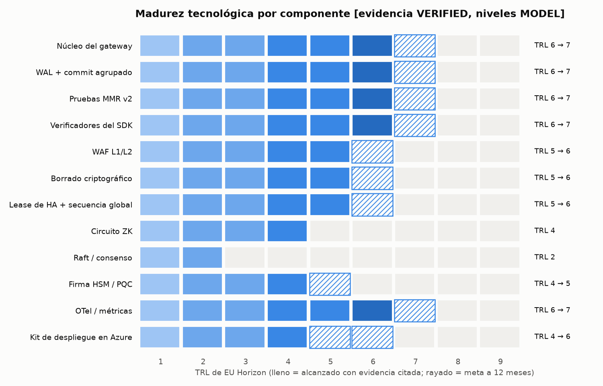
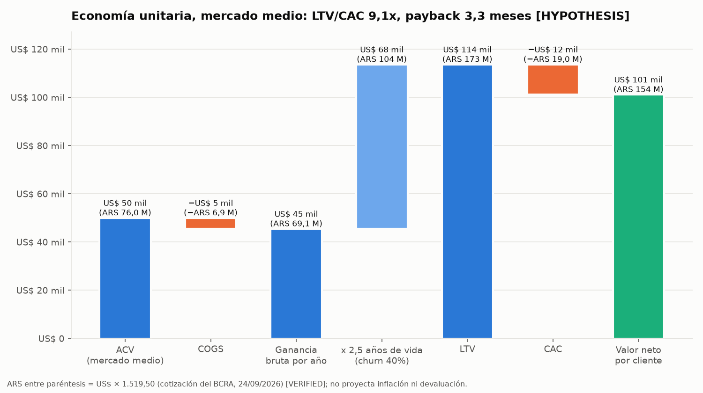
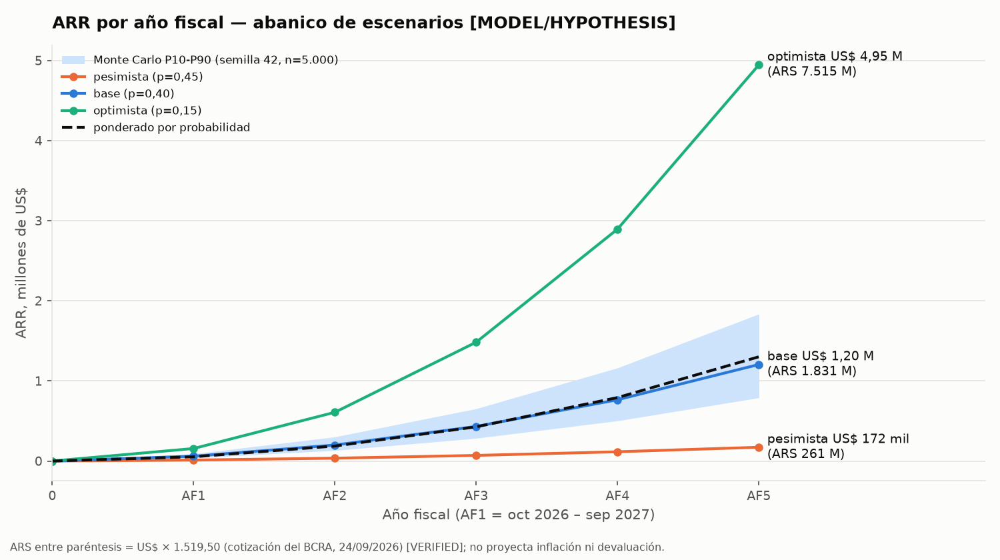
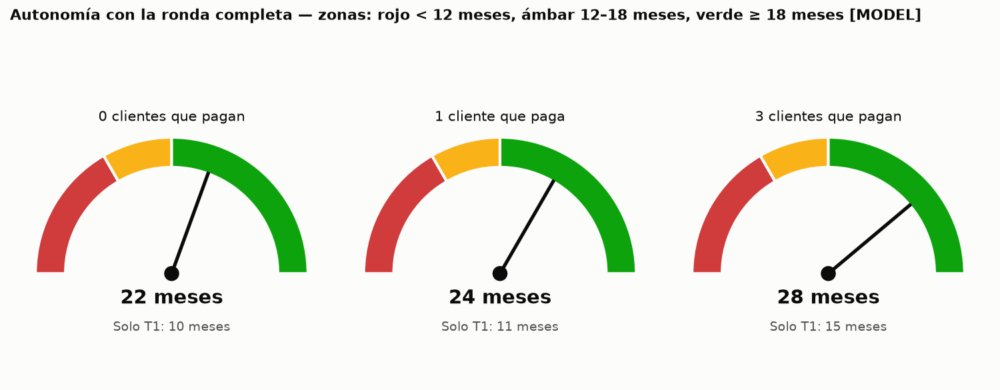
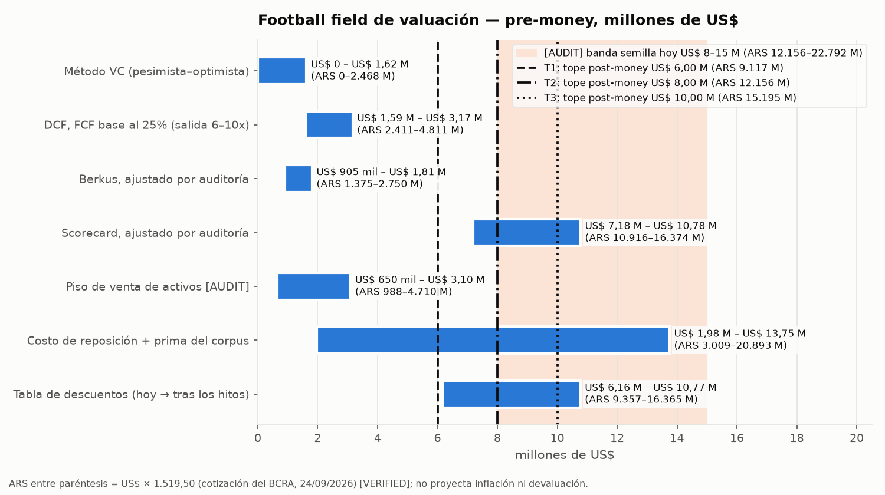
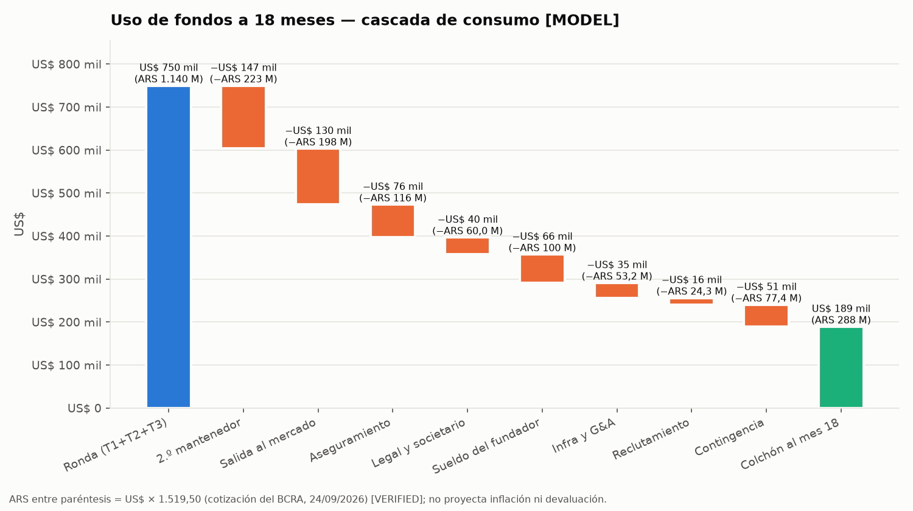

Orden de Misión XV · Data room semilla · preparado el 25 de septiembre de 2026 · edición en castellano rioplatense
Aegis Latent Core — Paquete para inversores semilla
Un gateway autoalojado que registra evidencia firmada y encadenada por hash de cada llamada de IA gobernada antes de que la respuesta llegue a quien la pidió. Este paquete le pone precio, lo somete a pruebas de estrés y dice qué lo refutaría.
Todas las cifras de D3 a D7 y los seis gráficos salen de un único script, aegis_financial_engine.py (semilla 42, reproducido completo en D8). Al contrastarlos con el repositorio y con fuentes primarias, nueve insumos del §0 se corrigieron o bajaron de categoría; el registro de conflictos está en D10.4.
Pesos argentinos. Cada monto en dólares lleva entre paréntesis su equivalente en pesos, calculado a US$ 1 = ARS 1.519,50V, la cotización del dólar que publica el BCRA para el 24/09/2026 (API de Estadísticas Cambiarias, consultada el 25/09/2026). El modelo corre en dólares: los pesos no proyectan inflación ni devaluación, y cada monto en pesos hereda la etiqueta del monto en dólares al que acompaña. En el texto, los pesos se calculan sobre el monto en dólares tal como se muestra; en las tablas, sobre el valor sin redondear, así que pueden diferir en el último dígito. Abreviaturas: “mil” = miles; “M” = millones.
D1 Memo ejecutivo de inversión
Tesis. Aegis Latent Core es un gateway autoalojado que escribe evidencia firmada y encadenada por hash de cada llamada de IA gobernada antes de que la respuesta llegue a quien la pidió, y emite pruebas de inclusión que un tercero verifica contra una raíz que obtuvo por su cuenta. Buscamos US$ 750 mil (ARS 1.140 M)M en tres tramos de SAFE atados a hitos, para convertir un código publicado y verificable de forma independiente en clientes de diseño que pagan.
Cuatro hechos que conviene conocer primero
- Los ingresos son cero y todavía no se entrevistó a ningún comprador. Mitigación en marcha: tres entrevistas y un piloto pago forman el Hito 2; el tramo 2 no se libera sin ellos.
- Una sola persona mantiene el código. Mitigación en marcha: el 20%M de la ronda (US$ 147 mil (ARS 223 M)M) paga un segundo mantenedor desde el mes 3M. El depósito en escrow está especificado en el manual del mantenedor; firmarlo es el hito M9.
- No existen una prueba de penetración (pentest) ni un informe SOC 2. Mitigación en marcha: un SOW de pentest firmado es condición del Hito 2; un auditor de SOC 2 Tipo I contratado es condición del Hito 3.
- Los métodos de flujo de caja valúan la empresa en US$ 0–3,2 M (ARS 0–4.862 M)M; los de mercado, en US$ 6,2–10,8 M (ARS 9.421–16.411 M)M (D6). Mitigación en marcha: los topes de los SAFE suben solo a medida que llega la evidencia: US$ 6 M (ARS 9.117 M) → US$ 8 M (ARS 12.156 M) → US$ 10 M (ARS 15.195 M) post-moneyM.
Lo que existe hoy, leído y comprobado
La versión 5.0.1 se publicó el 24 de septiembre de 2026V y se leyó de vuelta cada superficie: la etiqueta firmada con Sigstore, el GitHub Release (se recalcularon los hashes de 15V de 15V archivos con checksum), los SDK en PyPI y npm, idénticos byte a byte al release, y las imágenes de contenedor, cuyas firmas y procedencia de compilación se verifican contra el workflow que las publicó. Pasan 7.550V pruebas. El registro de afirmaciones contiene 112V afirmaciones con 0V hallazgos y rechaza 70V que no tienen respaldo. El commit de evidencia, escritura durable en disco incluida, mide p50 0,62 msV y p99 1,22 msV en una VM compartida de 4V vCPU.
Marco A: los relojes ya están corriendo
La Ley de IA de la UE se aplica desde el 2 de agosto de 2026V·P; sus prohibiciones rigen desde el 2 de febrero de 2025V·P y las obligaciones del Anexo I llegan el 2 de agosto de 2027V·P. La alternativa de audit trail de la regla 17a-4(f) de la SEC es exigible desde el 3 de mayo de 2023V·P. Los registros del artículo 16(7) de MiFID II se conservan 5 añosV·P, y 7V·P si la autoridad lo pide. Una empresa regulada que no puede mostrar qué se le pidió a un modelo, ni probar que el registro no se editó, asume esa pérdida en la inspección, mucho después de la decisión de compra.
Límite honesto Aegis es un insumo para estas obligaciones y nunca cumple ninguna por sí solo. Una empresa con almacenamiento WORM y un SIEM puede cumplir la 17a-4(f) sin Aegis.
Refutador Si se aprobó la propuesta de la UE para postergar las obligaciones de alto riesgo (su estado no se verificó en este paquete), el reloj europeo se corre a 2027–2028. Si 3H de 3H responsables de cumplimiento entrevistados dicen que su WORM y su SIEM ya les responden a los inspectores, el Marco A cae.
Marco B: el activo de confianza
En esta categoría, el marketing suele decir “a prueba de manipulaciones” y “cumple la normativa”. El corpus de Aegis no puede decirlo: una compuerta de CI rechaza cualquier afirmación pública sin un localizador de evidencia, 70V afirmaciones están rechazadas de manera explícita, y nada se da por publicado hasta leer de vuelta cada superficie. Quien haga la due diligence puede volver a correr cada control en una tarde.
Límite honesto La disciplina se puede copiar; por sí sola no es una barrera de entrada.
Refutador Una sola afirmación pública que no pase su propio localizador durante la due diligence termina con el Marco B.
Marco C: la ventana de consolidación
Las plataformas de seguridad compraron startups de seguridad para IA en lugar de construirlas: Robust Intelligence → Cisco (anunciada en agosto de 2024, informada en ≈US$ 400 M (ARS 607.800 M)M); Protect AI → Palo Alto Networks (abril de 2025, informada en US$ 500–700 M (ARS 759.750–1.063.650 M)M); Prompt Security → SentinelOne (agosto de 2025, informada en ≈US$ 250 M (ARS 379.875 M)M); Lakera → Check Point (septiembre de 2025, informada en ≈US$ 300 M (ARS 455.850 M)M); CalypsoAI → F5 (septiembre de 2025, US$ 180 M (ARS 273.510 M)M). Las fechas y los montos son los que informó la prensa y no se volvieron a verificar para este paquete.
Límite honesto Esas empresas protegen modelos y prompts, y cada una tenía equipo y clientes. Aegis es una capa de evidencia, adyacente a ellas pero no equivalente, y el modelo le asigna al escenario optimista apenas p = 0,15M.
Refutador Si ninguna línea de seguridad para IA de un comprador estratégico agrega un componente de evidencia de auditoría antes de fines de 2027, la tesis de la ventana no alcanza a esta categoría.
Marco D: compromiso, en tramos
US$ 300 mil (ARS 456 M)M a la firma; US$ 250 mil (ARS 380 M)M cuando se firme el piloto n.º 1 y se contrate el pentest; US$ 200 mil (ARS 304 M)M cuando haya dos clientes de diseño firmados, los hallazgos críticos del pentest estén corregidos y haya un auditor de SOC 2 Tipo I contratado. Un inversor que se detiene después del T1 arriesga US$ 300 mil (ARS 456 M)M frente a 10 mesesM de autonomía y un piso de venta de activos de US$ 0,65–3,1 M (ARS 988–4.710 M)M·A.
Límite honesto El esquema por tramos traslada el riesgo de financiamiento al fundador: un tramo posterior puede no llegar aunque se cumpla su hito.
Refutador Si el Hito 2 no se cumple al mes 8M, el T2 no se libera y el plan pasa al camino de cierre ordenado de D5.
Lo que dice el modelo
El ARR del año fiscal 5 (AF5) en el escenario base es US$ 1,20 M (ARS 1.823 M)H; ponderado por probabilidad, US$ 1,30 M (ARS 1.975 M)M. El escenario base necesita unos US$ 0,7 M (ARS 1.064 M)M adicionales hacia mediados del AF3. El optimista (p = 0,15M) llega a flujo de caja positivo en el AF3. El pesimista (p = 0,45M) gasta los tramos liberados hacia el mes 18M y sale por el camino de la venta de activos.
Censo de etiquetas V 17 (incl. 6 V·P) · M 25 (incl. 1 M·A) · H 3
D1 Resumen de una página
Qué es. Aegis Latent Core es un gateway que se instala en la infraestructura propia. Antes de que la respuesta de un modelo de IA llegue a quien la pidió, Aegis guarda una evidencia firmada y encadenada de esa llamada. Después puede darle a un tercero una prueba de que ese registro está incluido, sin que ese tercero tenga que confiar en nosotros.
Qué pedimos. US$ 750 mil (ARS 1.140 M)M en tres tramos de SAFE. Cada tramo se libera solo si se cumple un hito comprobable:
- Tramo 1: US$ 300 mil (ARS 456 M)M a la firma. Tope de valuación de US$ 6 M (ARS 9.117 M)M post-money.
- Tramo 2: US$ 250 mil (ARS 380 M)M cuando haya un piloto pago firmado y el pentest contratado. Tope de US$ 8 M (ARS 12.156 M)M.
- Tramo 3: US$ 200 mil (ARS 304 M)M con dos clientes de diseño firmados, los hallazgos críticos del pentest corregidos y un auditor de SOC 2 Tipo I contratado. Tope de US$ 10 M (ARS 15.195 M)M.
Lo que tenés que saber antes que nada. Todavía no hay ventas ni entrevistas con compradores. El código lo mantiene una sola persona; el 20%M de los fondos (US$ 147 mil (ARS 223 M)M) paga un segundo mantenedor. Todavía no hay pentest ni informe SOC 2; están atados a los tramos 2 y 3. Los métodos basados en flujo de caja valúan la empresa entre US$ 0 y US$ 3,2 M (ARS 4.862 M)M; los de mercado, entre US$ 6,2 M (ARS 9.421 M) y US$ 10,8 M (ARS 16.411 M)M. Por eso el tope sube a medida que aparece evidencia, en vez de fijarse alto desde el primer día.
Lo que ya existe y se puede comprobar. La versión 5.0.1 se publicó el 24/09/2026V. Verificamos la firma de la etiqueta, los 15V archivos del release contra sus checksums, los SDK en PyPI y npm (idénticos byte a byte al release) y la procedencia de las imágenes de contenedor. Pasan 7.550V pruebas. El registro de afirmaciones tiene 112V entradas sin hallazgos y rechaza 70V afirmaciones que no se pueden respaldar.
Por qué ahora. La Ley de IA de la UE rige desde el 2/8/2026V·P, y la alternativa de audit trail de la regla 17a-4(f) de la SEC se exige desde el 3/5/2023V·P. Las empresas reguladas van a tener que mostrar qué se le pidió a un modelo y probar que ese registro no se modificó. Qué lo refutaría: que los responsables de cumplimiento que entrevistemos digan que su almacenamiento WORM y su SIEM ya les alcanzan.
Riesgo cambiario y jurisdicción. El fundador vive en Argentina. El plan crea una sociedad en Delaware, le cede la propiedad intelectual y factura en dólares (hito M1). Los montos en pesos de este paquete son una referencia al tipo de cambio del 24/09/2026; el plan se ejecuta en dólares.
Escenarios a 5 años. Base: ARR de US$ 1,2 M (ARS 1.823 M)H en el año 5, con otra ronda de unos US$ 0,7 M (ARS 1.064 M)M a mitad del año 3. Pesimista (probabilidad 45%M): los fondos alcanzan unos 18 mesesM y se sale vendiendo los activos. Optimista (15%M): flujo de caja positivo desde el año 3.
Lo que NO decimos. No decimos que Aegis haga cumplir ninguna norma por vos, ni que tenga una certificación, ni que sea inviolable. Es un insumo para tu cumplimiento; no lo reemplaza.
Censo de etiquetas V 7 (incl. 2 V·P) · M 15 · H 1
D2 Madurez tecnológica (TRL 1–9 de EU Horizon)
TRL 4 significa validado en laboratorio; 5, validado en un entorno relevante; 6, demostrado en un entorno relevante; 7, demostrado en un entorno operativo. Los niveles son juicios MODEL contrastados con las anclas de la misión (núcleo 6–7, ZK 4, consenso 2–3, HSM 4); la columna de evidencia cita artefactos conservados. Se hicieron tres ajustes, cada uno con evidencia:
- El núcleo del gateway queda en 6, no en 7. La imagen publicada corre con su postura endurecida en CI, pero todavía no existe ningún entorno de cliente.
- “Lease de HA + secuencia global” es una fila nueva, en 5. La v5.0.1 lo implementa y el CI lo prueba contra Redis y PostgreSQL reales, con un failover por SIGKILL medido en 4,2–5,2 sV con un lease de 5 sV. Raft sigue siendo código huérfano, en 2. Esto corrige el “sin HA” del §0 sin afirmar HA de producción (D10.4).
- El kit de despliegue en Azure pasó de 3 a 4. Desde que se escribió el §0 se incorporaron
deploy/azure/phase0y un kit de VM, y se midió un despliegue (Standard_B2als_v2, Chile Central, 26/09/2026): modo estricto activo,verify.shaprobado, un registro firmado llegó al WAL. Las cifras de US$ 17,54 (ARS 26.652)/US$ 44,77 (ARS 68.028) por mes del §0 siguen sin medirse; el precio de lista de la propia VM, US$0,0526V/hora (≈US$38V/mes antes del disco), se verificó ese mismo día.
| Componente | TRL hoy | Evidencia | Brecha a TRL+1 | Semanas de ingeniería | Externo | Costo de cierre |
|---|---|---|---|---|---|---|
| Núcleo del gateway | 6 | 7.550 pruebas; la imagen publicada se probó con la postura endurecida (CLM-109); release 5.0.1 firmado | piloto operativo en un cliente de diseño | 8 | US$ 0 (ARS 0,00) | US$ 18.400 (ARS 28,0 M) |
| WAL + commit agrupado | 6 | commit p50 0,62 ms / p99 1,22 ms con fsync; 1.482 commits/s @100 hilos en 4 vCPU | prueba de resistencia de 30 días + prueba de corte de energía en el almacenamiento destino | 3 | US$ 1.000 (ARS 1,5 M) | US$ 7.900 (ARS 12,0 M) |
| Pruebas MMR v2 | 6 | raíces Rust/Python coincidentes; pruebas de inclusión portables (CLM-064) | verificación por un tercero en un piloto | 2 | US$ 0 (ARS 0,00) | US$ 4.600 (ARS 7,0 M) |
| Verificadores del SDK | 6 | PyPI/npm 5.0.1 idénticos byte a byte a los archivos del release; procedencia verificada | un auditor externo ejecuta aegis-sdk verify en un piloto | 2 | US$ 0 (ARS 0,00) | US$ 4.600 (ARS 7,0 M) |
| WAF L1/L2 | 5 | normalización probada contra un corpus; conjunto finito de patrones (UC-042) | evaluación adversarial publicada + cobertura del pentest | 4 | US$ 0 (ARS 0,00) | US$ 9.200 (ARS 14,0 M) |
| Borrado criptográfico | 5 | integrado al camino de commit; digests con clave (CLM-098) | revisión legal de la semántica de borrado + piloto | 3 | US$ 3.000 (ARS 4,6 M) | US$ 9.900 (ARS 15,0 M) |
| Lease de HA + secuencia global | 5 | CI contra Redis/PostgreSQL reales; failover por SIGKILL en 4,2-5,2 s (CLM-108) | pruebas de caos de partición y failover + piloto | 6 | US$ 2.000 (ARS 3,0 M) | US$ 15.800 (ARS 24,0 M) |
| Circuito ZK | 4 | protección de vista previa; fuera del camino de las solicitudes | auditoría del sistema de pruebas; diferida | 12 | US$ 40.000 (ARS 60,8 M) | US$ 67.600 (ARS 103 M) |
| Raft / consenso | 2 | módulo huérfano; reemplazado por el diseño de lease AD-17 | fuera de la hoja de ruta | 0 | US$ 0 (ARS 0,00) | US$ 0 (ARS 0,00) |
| Firma HSM / PQC | 4 | camino PKCS#11; ML-DSA-65 firma en 173 us y verifica en 62 us; Managed HSM excluido: US$ 2.342 (ARS 3,6 M) por mes | prueba de integración con una clave respaldada por HSM en Key Vault Premium | 4 | US$ 500 (ARS 759.750) | US$ 9.700 (ARS 14,7 M) |
| OTel / métricas | 6 | /metrics verificado en la imagen publicada por el recolector de evidencia (REG-D86) | tableros del piloto + runbook de alertas ejercitado | 1 | US$ 0 (ARS 0,00) | US$ 2.300 (ARS 3,5 M) |
| Kit de despliegue en Azure | 4 | kit de VM desplegado y medido una vez (Standard_B2als_v2, Chile Central, 26/09/2026): modo estricto activo, verify.sh aprobado, un registro firmado confirmado (REG-H07) | correr phase0_guardrails.sh de punta a punta, observar una alerta de presupuesto disparada, repetir en un segundo tamaño/región | 1 | US$ 200 (ARS 303.900) | US$ 2.500 (ARS 3,8 M) |
Cerrar cada brecha hasta el nivel siguiente cuesta US$ 84.900 (ARS 129 M)M en 34M semanas de ingeniería, sin contar la auditoría diferida del sistema de pruebas ZK (US$ 67.600 (ARS 103 M)M). La semana de ingeniería se costea en US$ 2.300 (ARS 3,5 M)M.

Censo de etiquetas V 4 · M 76 · H 0
D3 Motor de economía unitaria
CAC por canal. El outbound liderado por el fundador cuesta US$ 6,4 mil (ARS 9,7 M)M por cliente que paga (el supuesto previo del §0). Los demás canales no se probaron; con la mezcla supuesta, el CAC combinado es US$ 6,05 mil (ARS 9,2 M)H.
El supuesto previo, recalculado. Un LTV de US$ 33,75 mil (ARS 51,3 M)M con churn del 40%M y margen de contribución del 90%M implica un ACV de US$ 15,0 mil (ARS 22,8 M)M. Con un CAC de US$ 6,4 mil (ARS 9,7 M)M, el payback da 5,7 mesesM, no los 6,3M informados (D10.4).
Dónde vive o muere este negocio. En el segmento de mercado medio, el LTV/CAC es 9,1xH si el CAC equivale al 25%H del ACV. Si el CAC iguala al ACV del primer año, como suele pasar en la venta empresarial regulada, el LTV/CAC cae a 2,25xM con churn del 40%M, por debajo del piso habitual de 3xM. El experimento de CAC de D10 importa más que el de churn.
Economía del excedente por MGT. “MGT” es un millón de transacciones gobernadas, un término contractual y no un medidor en tiempo de ejecución. Con hosting de Aegis, el costo marginal es de US$ 1,99 (ARS 3.024)M por MGT:
- Cómputo, US$ 0,12 (ARS 182,34)M: una VM de 4 vCPU a US$ 0,192/h (ARS 291,74/h)V con 1.482 commits/sV, operada al 30%M de utilización.
- Almacenamiento, US$ 1,87 (ARS 2.841)M: 1,5 GBM conservados durante 60 mesesM a US$ 0,0208/GB-mes (ARS 31,61/GB-mes)V.
Frente a un precio de US$ 500–1.500 (ARS 0,8–2,3 M)H, el margen es de 99,6–99,9%M. En la modalidad autoalojada, la infraestructura la pone el cliente, y nuestro costo marginal es el soporte, no el volumen.
El burn multiple y el magic number salen del modelo base de tres estados (D4): burn multiple de 5,0H en el AF1, que baja a 0,5H en el AF5; proxy del magic number, 0,76–0,95H.
| Nivel | ACV | MC | CAC | LTV @25% | LTV @40% | LTV @55% | Payback (meses) | LTV/CAC @40% |
|---|---|---|---|---|---|---|---|---|
| Base combinada (supuesto previo §0) | US$ 15,0 mil (ARS 22,8 M) | 90,0% | US$ 6,4 mil (ARS 9,7 M) | US$ 54,0 mil (ARS 82,1 M) | US$ 33,8 mil (ARS 51,3 M) | US$ 24,5 mil (ARS 37,3 M) | 5,7 | 5,3x |
| Mercado medio | US$ 50,0 mil (ARS 76,0 M) | 90,9% | US$ 12,5 mil (ARS 19,0 M) | US$ 181,9 mil (ARS 276 M) | US$ 113,7 mil (ARS 173 M) | US$ 82,7 mil (ARS 126 M) | 3,3 | 9,1x |
| Gran empresa | US$ 150,0 mil (ARS 228 M) | 90,3% | US$ 33,8 mil (ARS 51,3 M) | US$ 541,9 mil (ARS 823 M) | US$ 338,7 mil (ARS 515 M) | US$ 246,3 mil (ARS 374 M) | 3,0 | 10,0x |
| Piloto (único) | US$ 10,0 mil (ARS 15,2 M) | 75,0% | US$ 0 | US$ 7,5 mil (ARS 11,4 M) | US$ 7,5 mil (ARS 11,4 M) | US$ 7,5 mil (ARS 11,4 M) | 0,0 | n/d |
| Canal | CAC | Mezcla |
|---|---|---|
| Outbound liderado por el fundador | US$ 6,4 mil (ARS 9,7 M) | 50% |
| Inbound de código abierto | US$ 2,0 mil (ARS 3,0 M) | 30% |
| Socios e integradores | US$ 9,0 mil (ARS 13,7 M) | 15% |
| Eventos y medios pagos | US$ 18,0 mil (ARS 27,4 M) | 5% |
| Combinado | US$ 6,0 mil (ARS 9,2 M) | 100% |
| Banda | Precio/MGT | Costo marginal/MGT | Margen |
|---|---|---|---|
| 10-50 M | US$ 1.500 (ARS 2,3 M) | US$ 1,99 (ARS 3.027) | 99,87% |
| 50-250 M | US$ 950 (ARS 1,4 M) | US$ 1,99 (ARS 3.027) | 99,79% |
| 250 M+ | US$ 500 (ARS 759.750) | US$ 1,99 (ARS 3.027) | 99,60% |
| Churn \ ACV | US$ 15,0 mil (ARS 22,8 M) | US$ 25,0 mil (ARS 38,0 M) | US$ 50,0 mil (ARS 76,0 M) | US$ 75,0 mil (ARS 114 M) | US$ 135,0 mil (ARS 205 M) |
|---|---|---|---|---|---|
| 25% | 8,4x · LTV US$ 54,0 mil (ARS 82,1 M) | 14,1x · LTV US$ 90,0 mil (ARS 137 M) | 14,4x · LTV US$ 180,0 mil (ARS 274 M) | 14,4x · LTV US$ 270,0 mil (ARS 410 M) | 14,4x · LTV US$ 486,0 mil (ARS 738 M) |
| 40% | 5,3x · LTV US$ 33,8 mil (ARS 51,3 M) | 8,8x · LTV US$ 56,2 mil (ARS 85,5 M) | 9,0x · LTV US$ 112,5 mil (ARS 171 M) | 9,0x · LTV US$ 168,8 mil (ARS 256 M) | 9,0x · LTV US$ 303,8 mil (ARS 462 M) |
| 55% | 3,8x · LTV US$ 24,5 mil (ARS 37,3 M) | 6,4x · LTV US$ 40,9 mil (ARS 62,2 M) | 6,5x · LTV US$ 81,8 mil (ARS 124 M) | 6,5x · LTV US$ 122,7 mil (ARS 186 M) | 6,5x · LTV US$ 220,9 mil (ARS 336 M) |
| Churn | LTV/CAC |
|---|---|
| 25% | 3,60x |
| 40% | 2,25x |
| 55% | 1,64x |

Refutador Si las horas del fundador más los gastos por cada venta cerrada de mercado medio superan US$ 50 mil (ARS 76,0 M)H (CAC ≈ ACV), el caso de 9,1xH cae: hay que subir el precio o cambiar de segmento.
Censo de etiquetas V 3 · M 91 · H 64
D4 Modelo de tres estados a cinco años
Convenciones.
- El AF1 (año fiscal 1) va de octubre de 2026 a septiembre de 2027.
- El ARR nuevo se computa a mitad de año, y el churn y la expansión se aplican sobre el ARR de apertura.
- Las cuentas por cobrar equivalen a 45M días de ingresos; los ingresos diferidos son el 50%M del ARR (facturación anual por adelantado).
- El equipamiento se registra como gasto (sin capex), y el impuesto se aplica solo cuando el resultado antes de impuestos acumulado se vuelve positivo.
- El balance mínimo (caja, cuentas por cobrar, ingresos diferidos y patrimonio) cuadra en 0,00 en cada año de cada escenario.
- Una caja negativa es la brecha sin financiar que tiene que cubrir la ronda siguiente.
Pesos de los escenarios. Pesimista 0,45M, base 0,40M, optimista 0,15M. El puntaje de auditoría de 51/100M·A se interpreta como P(base o mejor) ≈ 0,55M, y el optimista se limita a 0,15M porque no se entrevistó a ningún comprador.
Pestaña de supuestos
| Insumo | Valor | Etiqueta | Fundamento |
|---|---|---|---|
hsm_b1_hourly_usd | US$ 3,2 (ARS 4.862) | V | API Azure Retail Prices, 'Key Vault HSM Pool' Standard B1, eastus, meterId 74a72b91-1389-578c-b534-d4c204e6e37d, consultada el 25/09/2026 |
hsm_b1_month_usd | US$ 2.342,4 (ARS 3,6 M) | V | 3,20 USD/h x 732 h (mes de 30,5 días) = 2.342,40; excluido por diseño |
vm_d4s_v5_hourly_usd | US$ 0,192 (ARS 291,74) | V | API Azure Retail Prices, Standard_D4s_v5 Linux, eastus, meterId db8c0962-f3f8-5b44-99aa-f3c7c1e668c8, consultada el 25/09/2026 |
blob_hot_lrs_gb_month_usd | US$ 0,0208 (ARS 31,61) | V | API Azure Retail Prices, Blob Hot LRS, datos almacenados, primer tramo, eastus, meterId 272492b3-1c92-4a5f-bee9-52a8e10ca514, consultada el 25/09/2026 |
fx_ars_per_usd | 1.519,5 | V | API del BCRA Estadísticas Cambiarias v1.0, Cotizaciones/USD, fecha 24/09/2026 (tipoCotizacion), consultada el 25/09/2026; solo la usa la edición en castellano para mostrar pesos entre paréntesis |
azure_b2als_v2_chilecentral_hourly_usd | US$ 0,0526 (ARS 79,93) | V | evidence/benchmarks/azure/azure_Standard_B2als_v2_chilecentral_2026-09-26.json (SHA-256 762016d9...); precio de lista obtenido con aegis_azure_kit.py estimate, 26/09/2026; solo la VM, sin el disco adjunto |
commits_per_s_100_threads | 1.482,37 | V | evidence/benchmarks/benchmarks_5.0.1_2026-09-24.json, VM compartida de 4 vCPU, commit_forensic con append al MMR + HMAC + fsync del WAL |
commit_p50_ms | 0,617 | V | mismo artefacto, n=1000 |
commit_p99_ms | 1,216 | V | mismo artefacto, n=1000 |
tests_passed | 7.550 | V | pytest -n auto sobre el árbol 5.0.1, 24/09/2026: 7.550 aprobadas, 41 omitidas, 0 fallidas |
claims_registered | 112 | V | scripts/verify_claims.py, 25/09/2026: 0 hallazgos |
claims_refused | 70 | V | filas de docs/institutional/UNSUPPORTED_CLAIMS.md |
test_to_source_loc | 1,24 | V | 87.557 líneas de prueba / 70.672 líneas de código Python (aegis + aegis_server), 25/09/2026 |
orphan_modules_disclosed | 77 | V | entradas de scripts/import_reachability_allowlist.txt, sobre ~207 módulos de aegis |
azure_typical_month_usd | US$ 17,54 (ARS 26.652) | M | dato de planificación del fundador; el archivo de evidencia citado no está en el repositorio (docs/REGISTRY_HUMAN_PACK.md) -> baja de VERIFIED a MODEL |
azure_worst_month_usd | US$ 44,77 (ARS 68.028) | M | dato del fundador, mismo estado |
azure_credit_usd | US$ 200 (ARS 303.900) | M | crédito de Founders Hub, según el fundador |
human_fixed_cash_month_usd | US$ 100 (ARS 151.950) | M | supuesto previo del fundador |
cac_founder_led_usd | US$ 6.400 (ARS 9,7 M) | M | supuesto previo: venta liderada por el fundador, por cliente que paga |
churn_prior | 0,4 | M | supuesto previo de churn anual de clientes |
contribution_margin_prior | 0,9 | M | supuesto previo |
ltv_prior_usd | US$ 33.750 (ARS 51,3 M) | M | supuesto previo con churn del 40% |
acv_implied_by_prior_usd | US$ 15.000 (ARS 22,8 M) | M | LTV x churn / MC = 15.000 (derivado) |
payback_prior_months | 6,3 | M | supuesto previo tal como se recibió |
support_cost_per_customer_year | US$ 4.000 (ARS 6,1 M) | M | 0,05 FTE de un senior de 80 mil; producto autoalojado |
hosting_per_customer_year | US$ 537,24 (ARS 816.336) | M | un entorno de staging/demo al costo mensual de Azure del peor caso |
pilot_delivery_cost_share | 0,25 | M | tiempo del fundador/ingeniero de soluciones + viajes |
payment_fee_share | 0,03 | M | tarjetas/transferencias/diferencial cambiario |
evidence_record_bytes | 1.500 | M | línea JSONL del WAL con MMR y firma |
retention_months | 60 | M | horizonte de cinco años de MiFID II art. 16(7) |
hosted_vm_utilisation | 0,3 | M | utilización promedio de un nodo alojado |
dso_days | 45 | M | plazos empresariales de 30/45 días |
deferred_revenue_share_of_arr | 0,5 | M | facturación anual por adelantado, a mitad de período |
tax_rate | 0,25 | M | se aplica solo cuando el resultado antes de impuestos acumulado es > 0 |
commission_share_of_new_acv | 0,08 | M | |
opex_contingency | 0,1 | M | |
engineering_week_usd | US$ 2.300 (ARS 3,5 M) | M | 110 mil con cargas / 48 semanas |
scorecard_reference_usd | US$ 10 M (ARS 15.195 M) | M | referencia de tope post-money de SAFE pre-semilla (medianas de EE. UU. informadas por la prensa); rango 8-12 M |
exit_arr_multiple | pesimista: 4,0; base: 8,0; optimista: 12,0 | M | rango de M&A privado de software de seguridad (sin comparables con prima estratégica) |
vc_target_multiple | 10,0 | M | especificación de la misión |
vc_stage_discount | 0,6 | M | especificación de la misión: se aplica como factor de retención de 0,40 |
dcf_discount_rate | 0,25 | M | especificación de la misión |
scenario_probabilities | pesimista: 0,45; base: 0,4; optimista: 0,15 | M | auditoría 51/100 ~ P(base o mejor)=0,55; el optimista se limita a 0,15 sin entrevistas con compradores |
audit_bands | reposición: US$ 1,8 M – US$ 11 M (ARS 2.735–16.714 M); piso de activos: US$ 650.000 – US$ 3,1 M (ARS 988–4.710 M); semilla hoy: US$ 8 M – US$ 15 M (ARS 12.156–22.792 M); tras las condiciones: US$ 18 M – US$ 28 M (ARS 27.351–42.546 M); serie A: US$ 30 M – US$ 60 M (ARS 45.585–91.170 M); puntaje: 51 | M | [AUDIT] auditoría independiente realizada, tal como se recibió |
raise_usd | T1: US$ 300.000 (ARS 456 M); T2: US$ 250.000 (ARS 380 M); T3: US$ 200.000 (ARS 304 M) | M | SAFE por tramos atados a hitos, dimensionado al plan de 18 meses + contingencia |
post_money_caps_usd | T1: US$ 6 M (ARS 9.117 M); T2: US$ 8 M (ARS 12.156 M); T3: US$ 10 M (ARS 15.195 M) | M | escalonado por hitos: T1 al valor con descuentos de hoy, T2 en el piso [AUDIT], T3 por encima |
pricing | piloto: US$ 2.500 – US$ 30.000 (ARS 3,8–45,6 M); mercado medio: US$ 25.000 – US$ 75.000 (ARS 38–114 M); gran empresa: US$ 95.000 – US$ 175.000 (ARS 144–266 M); por MGT: 10-50M: US$ 1.500 (ARS 2,3 M); 50-250M: US$ 950 (ARS 1,4 M); 250M+: US$ 500 (ARS 759.750) | H | cero entrevistas con compradores; se valida con 3 entrevistas + 1 piloto pago (REG-H06) |
channel_cac_usd | Outbound liderado por el fundador: US$ 6.400 (ARS 9,7 M); Inbound de código abierto: US$ 2.000 (ARS 3,0 M); Socios e integradores: US$ 9.000 (ARS 13,7 M); Eventos y medios pagos: US$ 18.000 (ARS 27,4 M) | H | la venta del fundador es el supuesto previo MODEL; el resto no se probó |
channel_mix | Outbound liderado por el fundador: 0,5; Inbound de código abierto: 0,3; Socios e integradores: 0,15; Eventos y medios pagos: 0,05 | H | |
scenarios | ver “Palancas de los escenarios”, más abajo | H | pilotos, conversión, trayectoria del ACV, churn y expansión por escenario |
Palancas de los escenarios [HYPOTHESIS]
| Palanca | Pesimista | Base | Optimista |
|---|---|---|---|
| Pilotos por año, AF1–AF5 | 2, 4, 6, 8, 10 | 4, 8, 12, 16, 20 | 6, 12, 18, 24, 30 |
| Precio promedio del piloto | US$ 5.000 (ARS 7,6 M) | US$ 10.000 (ARS 15,2 M) | US$ 15.000 (ARS 22,8 M) |
| Conversión de piloto a contrato anual | 30% | 50% | 65% |
| ACV de clientes nuevos, AF1–AF5 | US$ 20 / 25 / 30 / 35 / 40 mil (ARS 30,4 / 38,0 / 45,6 / 53,2 / 60,8 M) | US$ 30 / 40 / 50 / 60 / 70 mil (ARS 46 / 61 / 76 / 91 / 106 M) | US$ 40 / 60 / 80 / 100 / 120 mil (ARS 61 / 91 / 122 / 152 / 182 M) |
| Churn anual de clientes | 55% | 40% | 25% |
| Expansión neta sobre el ARR retenido | 0% | 10% | 20% |
| Línea | AF1 | AF2 | AF3 | AF4 | AF5 |
|---|---|---|---|---|---|
| Clientes nuevos | 0,6 | 1,2 | 1,8 | 2,4 | 3,0 |
| Clientes (cierre) | 0,6 | 1,5 | 2,5 | 3,5 | 4,6 |
| ARR (cierre) | US$ 12,0 mil (ARS 18,2 M) | US$ 35,4 mil (ARS 53,8 M) | US$ 69,9 mil (ARS 106 M) | US$ 115,5 mil (ARS 175 M) | US$ 172,0 mil (ARS 261 M) |
| Ingresos | US$ 16,0 mil (ARS 24,3 M) | US$ 43,7 mil (ARS 66,4 M) | US$ 82,7 mil (ARS 126 M) | US$ 132,7 mil (ARS 202 M) | US$ 193,7 mil (ARS 294 M) |
| Margen bruto | 73% | 75% | 77% | 79% | 81% |
| OpEx | US$ 361,1 mil (ARS 549 M) | US$ 449,3 mil (ARS 683 M) | US$ 385,4 mil (ARS 586 M) | US$ 409,2 mil (ARS 622 M) | US$ 433,7 mil (ARS 659 M) |
| EBITDA | −US$ 349,4 mil (−ARS 531 M) | −US$ 416,6 mil (−ARS 633 M) | −US$ 321,6 mil (−ARS 489 M) | −US$ 304,0 mil (−ARS 462 M) | −US$ 276,6 mil (−ARS 420 M) |
| Resultado neto | −US$ 349,4 mil (−ARS 531 M) | −US$ 416,6 mil (−ARS 633 M) | −US$ 321,6 mil (−ARS 489 M) | −US$ 304,0 mil (−ARS 462 M) | −US$ 276,6 mil (−ARS 420 M) |
| Flujo operativo (CFO) | −US$ 345,4 mil (−ARS 525 M) | −US$ 408,4 mil (−ARS 621 M) | −US$ 309,2 mil (−ARS 470 M) | −US$ 287,4 mil (−ARS 437 M) | −US$ 255,9 mil (−ARS 389 M) |
| Flujo de financiación (tramos SAFE) | US$ 550,0 mil (ARS 836 M) | US$ 0 | US$ 0 | US$ 0 | US$ 0 |
| Caja / (brecha sin financiar), cierre | US$ 204,6 mil (ARS 311 M) | −US$ 203,8 mil (−ARS 310 M) | −US$ 513,0 mil (−ARS 779 M) | −US$ 800,3 mil (−ARS 1.216 M) | −US$ 1,06 M (−ARS 1.605 M) |
| Cuentas por cobrar | US$ 2,0 mil (ARS 3,0 M) | US$ 5,4 mil (ARS 8,2 M) | US$ 10,2 mil (ARS 15,5 M) | US$ 16,4 mil (ARS 24,9 M) | US$ 23,9 mil (ARS 36,3 M) |
| Ingresos diferidos | US$ 6,0 mil (ARS 9,1 M) | US$ 17,7 mil (ARS 26,9 M) | US$ 35,0 mil (ARS 53,1 M) | US$ 57,7 mil (ARS 87,7 M) | US$ 86,0 mil (ARS 131 M) |
| Patrimonio (aportes + resultados) | US$ 200,6 mil (ARS 305 M) | −US$ 216,1 mil (−ARS 328 M) | −US$ 537,7 mil (−ARS 817 M) | −US$ 841,7 mil (−ARS 1.279 M) | −US$ 1,12 M (−ARS 1.699 M) |
| Control de balance (A−P−PN) | 0,00 | 0,00 | 0,00 | 0,00 | 0,00 |
| Dotación | 3 | 3 | 2 | 2 | 2 |
| Burn multiple | 28,8 | 17,5 | 9,0 | 6,3 | 4,5 |
| Magic number (proxy) | 0,19 | 0,19 | 1,10 | 1,07 | 1,03 |
| Línea | AF1 | AF2 | AF3 | AF4 | AF5 |
|---|---|---|---|---|---|
| Clientes nuevos | 2,0 | 4,0 | 6,0 | 8,0 | 10,0 |
| Clientes (cierre) | 2,0 | 5,2 | 9,1 | 13,5 | 18,1 |
| ARR (cierre) | US$ 60,0 mil (ARS 91,2 M) | US$ 199,6 mil (ARS 303 M) | US$ 431,7 mil (ARS 656 M) | US$ 764,9 mil (ARS 1.162 M) | US$ 1,20 M (ARS 1.831 M) |
| Ingresos | US$ 70,0 mil (ARS 106 M) | US$ 210,4 mil (ARS 320 M) | US$ 437,7 mil (ARS 665 M) | US$ 762,7 mil (ARS 1.159 M) | US$ 1,19 M (ARS 1.812 M) |
| Margen bruto | 76% | 80% | 83% | 85% | 87% |
| OpEx | US$ 373,2 mil (ARS 567 M) | US$ 474,0 mil (ARS 720 M) | US$ 816,4 mil (ARS 1.241 M) | US$ 1,08 M (ARS 1.639 M) | US$ 1,41 M (ARS 2.148 M) |
| EBITDA | −US$ 319,9 mil (−ARS 486 M) | −US$ 306,2 mil (−ARS 465 M) | −US$ 454,4 mil (−ARS 690 M) | −US$ 429,8 mil (−ARS 653 M) | −US$ 378,1 mil (−ARS 575 M) |
| Resultado neto | −US$ 319,9 mil (−ARS 486 M) | −US$ 306,2 mil (−ARS 465 M) | −US$ 454,4 mil (−ARS 690 M) | −US$ 429,8 mil (−ARS 653 M) | −US$ 378,1 mil (−ARS 575 M) |
| Flujo operativo (CFO) | −US$ 298,5 mil (−ARS 454 M) | −US$ 253,7 mil (−ARS 386 M) | −US$ 366,3 mil (−ARS 557 M) | −US$ 303,3 mil (−ARS 461 M) | −US$ 211,1 mil (−ARS 321 M) |
| Flujo de financiación (tramos SAFE) | US$ 550,0 mil (ARS 836 M) | US$ 200,0 mil (ARS 304 M) | US$ 0 | US$ 0 | US$ 0 |
| Caja / (brecha sin financiar), cierre | US$ 251,5 mil (ARS 382 M) | US$ 197,8 mil (ARS 301 M) | −US$ 168,6 mil (−ARS 256 M) | −US$ 471,9 mil (−ARS 717 M) | −US$ 683,0 mil (−ARS 1.038 M) |
| Cuentas por cobrar | US$ 8,6 mil (ARS 13,1 M) | US$ 25,9 mil (ARS 39,4 M) | US$ 54,0 mil (ARS 82,0 M) | US$ 94,0 mil (ARS 143 M) | US$ 147,0 mil (ARS 223 M) |
| Ingresos diferidos | US$ 30,0 mil (ARS 45,6 M) | US$ 99,8 mil (ARS 152 M) | US$ 215,9 mil (ARS 328 M) | US$ 382,5 mil (ARS 581 M) | US$ 602,4 mil (ARS 915 M) |
| Patrimonio (aportes + resultados) | US$ 230,1 mil (ARS 350 M) | US$ 123,9 mil (ARS 188 M) | −US$ 330,5 mil (−ARS 502 M) | −US$ 760,3 mil (−ARS 1.155 M) | −US$ 1,14 M (−ARS 1.730 M) |
| Control de balance (A−P−PN) | -0,00 | -0,00 | 0,00 | 0,00 | 0,00 |
| Dotación | 3 | 3 | 5 | 7 | 9 |
| Burn multiple | 5,0 | 1,8 | 1,6 | 0,9 | 0,5 |
| Magic number (proxy) | 0,82 | 0,95 | 0,78 | 0,82 | 0,76 |
| Línea | AF1 | AF2 | AF3 | AF4 | AF5 |
|---|---|---|---|---|---|
| Clientes nuevos | 3,9 | 7,8 | 11,7 | 15,6 | 19,5 |
| Clientes (cierre) | 3,9 | 10,7 | 19,7 | 30,4 | 42,3 |
| ARR (cierre) | US$ 156,0 mil (ARS 237 M) | US$ 608,4 mil (ARS 924 M) | US$ 1,48 M (ARS 2.254 M) | US$ 2,90 M (ARS 4.399 M) | US$ 4,95 M (ARS 7.515 M) |
| Ingresos | US$ 168,0 mil (ARS 255 M) | US$ 564,1 mil (ARS 857 M) | US$ 1,32 M (ARS 2.011 M) | US$ 2,57 M (ARS 3.902 M) | US$ 4,41 M (ARS 6.696 M) |
| Margen bruto | 78% | 83% | 87% | 89% | 91% |
| OpEx | US$ 391,6 mil (ARS 595 M) | US$ 788,2 mil (ARS 1.198 M) | US$ 1,11 M (ARS 1.688 M) | US$ 1,49 M (ARS 2.263 M) | US$ 1,90 M (ARS 2.893 M) |
| EBITDA | −US$ 260,0 mil (−ARS 395 M) | −US$ 319,1 mil (−ARS 485 M) | US$ 36,5 mil (ARS 55,4 M) | US$ 798,0 mil (ARS 1.213 M) | US$ 2,09 M (ARS 3.181 M) |
| Resultado neto | −US$ 260,0 mil (−ARS 395 M) | −US$ 319,1 mil (−ARS 485 M) | US$ 36,5 mil (ARS 55,4 M) | US$ 598,5 mil (ARS 909 M) | US$ 1,57 M (ARS 2.385 M) |
| Flujo operativo (CFO) | −US$ 202,7 mil (−ARS 308 M) | −US$ 141,8 mil (−ARS 215 M) | US$ 380,4 mil (ARS 578 M) | US$ 1,15 M (ARS 1.749 M) | US$ 2,37 M (ARS 3.599 M) |
| Flujo de financiación (tramos SAFE) | US$ 750,0 mil (ARS 1.140 M) | US$ 0 | US$ 0 | US$ 0 | US$ 0 |
| Caja / (brecha sin financiar), cierre | US$ 547,3 mil (ARS 832 M) | US$ 405,5 mil (ARS 616 M) | US$ 786,0 mil (ARS 1.194 M) | US$ 1,94 M (ARS 2.943 M) | US$ 4,31 M (ARS 6.542 M) |
| Cuentas por cobrar | US$ 20,7 mil (ARS 31,5 M) | US$ 69,6 mil (ARS 106 M) | US$ 163,2 mil (ARS 248 M) | US$ 316,6 mil (ARS 481 M) | US$ 543,3 mil (ARS 826 M) |
| Ingresos diferidos | US$ 78,0 mil (ARS 119 M) | US$ 304,2 mil (ARS 462 M) | US$ 741,8 mil (ARS 1.127 M) | US$ 1,45 M (ARS 2.200 M) | US$ 2,47 M (ARS 3.757 M) |
| Patrimonio (aportes + resultados) | US$ 490,0 mil (ARS 745 M) | US$ 170,9 mil (ARS 260 M) | US$ 207,4 mil (ARS 315 M) | US$ 805,9 mil (ARS 1.225 M) | US$ 2,38 M (ARS 3.610 M) |
| Control de balance (A−P−PN) | 0,00 | 0,00 | 0,00 | 0,00 | 0,00 |
| Dotación | 3 | 5 | 7 | 9 | 11 |
| Burn multiple | 1,3 | 0,3 | — | — | — |
| Magic number (proxy) | 1,74 | 1,48 | 1,97 | 2,16 | 2,31 |
Resultados
| Escenario | ARR AF5 | EBITDA AF5 | El capital liberado se agota | Brecha sin financiar al AF5 | Consecuencia |
|---|---|---|---|---|---|
| Pesimista (0,45M) | US$ 172 mil (ARS 261 M)H | −US$ 277 mil (−ARS 421 M)H | ≈ mes 18M | US$ 1,06 M (ARS 1.611 M)H | Camino de cierre ordenado (D5) |
| Base (0,40M) | US$ 1,20 M (ARS 1.823 M)H | −US$ 378 mil (−ARS 574 M)H | ≈ mes 30M | US$ 683 mil (ARS 1.038 M)H | Ronda siguiente ≥ US$ 0,7 M (ARS 1.064 M)M hacia mediados del AF3 |
| Optimista (0,15M) | US$ 4,95 M (ARS 7.522 M)H | US$ 2,09 M (ARS 3.176 M)H | nunca | US$ 0H | Flujo de caja positivo desde el AF3 |
| Ponderado por probabilidad | US$ 1,30 M (ARS 1.975 M)M |

| Percentil | AF1 | AF2 | AF3 | AF4 | AF5 |
|---|---|---|---|---|---|
| P10 | US$ 39,7 mil (ARS 60,3 M) | US$ 132,1 mil (ARS 201 M) | US$ 283,9 mil (ARS 431 M) | US$ 502,0 mil (ARS 763 M) | US$ 789,6 mil (ARS 1.200 M) |
| P50 | US$ 60,8 mil (ARS 92,4 M) | US$ 202,8 mil (ARS 308 M) | US$ 437,2 mil (ARS 664 M) | US$ 774,7 mil (ARS 1.177 M) | US$ 1,22 M (ARS 1.853 M) |
| P90 | US$ 90,3 mil (ARS 137 M) | US$ 301,5 mil (ARS 458 M) | US$ 653,4 mil (ARS 993 M) | US$ 1,16 M (ARS 1.766 M) | US$ 1,83 M (ARS 2.788 M) |
La banda de Monte Carlo sortea de forma independiente la conversión, el churn, la expansión, el ACV y el volumen de pilotos, a partir de distribuciones triangulares alrededor del escenario base. Su P10–P90 del AF5, de US$ 0,79–1,83 M (ARS 1.200–2.781 M)M, es más angosta que el rango entre el pesimista y el optimista porque cada escenario con nombre lleva todas las palancas a su extremo al mismo tiempo.
Censo de etiquetas V 14 · M 78 (incl. 1 M·A) · H 479
D5 Tablero de consumo y autonomía de caja
Hoy, antes del financiamiento
Las cifras de Azure las aportó el fundador; el archivo de precios que las respalda no está en el repositorio, por lo que llevan la etiqueta MODEL (D10.4).
| Ítem | Típico | Peor caso |
|---|---|---|
| Azure / mes | US$ 17,54 (ARS 26.652) | US$ 44,77 (ARS 68.028) |
| Autonomía del crédito (meses) | 11,4 | 4,5 |
| Consumo de caja mientras dura el crédito | US$ 100 (ARS 151.950) | US$ 100 (ARS 151.950) |
| Consumo de caja después del crédito | US$ 117,54 (ARS 178.602) | US$ 144,77 (ARS 219.978) |
| Managed HSM B1 (excluido) | US$ 2.342,40 (ARS 3,6 M) [VERIFIED] | — |
| Alerta | Gasto | Mes @típico | Mes @peor caso |
|---|---|---|---|
| 50% | US$ 100 (ARS 151.950) | 5,7 | 2,2 |
| 80% | US$ 160 (ARS 243.120) | 9,1 | 3,6 |
| 95% | US$ 190 (ARS 288.705) | 10,8 | 4,2 |
Economía del corte automático. Un presupuesto de suscripción de US$ 200 (ARS 303.900)M tiene alertas al 50/80/95%M y un grupo de acciones que desasigna el cómputo al 95% (US$ 190 (ARS 288.705)M). Con el mes del peor caso, ese corte se dispara en el mes 4,2M; con el mes típico, en el mes 10,8M. La desasignación frena la facturación del cómputo, y los discos siguen facturando a una tarifa que acá no se midió. Un Managed HSM B1 a US$ 3,20/h (ARS 4.862/h)V (US$ 2.342/mes (ARS 3,6 M/mes)V) consumiría el crédito completo de US$ 200 (ARS 303.900)M en 62,5 horasM; por eso queda excluido por diseño.
Después del financiamiento
El OpEx mensual promedio de los primeros 18 meses es de US$ 33,9 mil (ARS 51,5 M)M; cada cliente de mercado medio aporta US$ 3,8 mil (ARS 5,8 M)H por mes después del COGS.
| Capital | 0 clientes | 1 cliente | 3 clientes |
|---|---|---|---|
| todos los tramos | 22 | 24 | 28 |
| solo T1 | 10 | 11 | 15 |

Alertas del presupuesto por tramo
| Proporción del capital liberado ya gastada | Acción |
|---|---|
| 50%M | Revisión de hitos con los tenedores de SAFE: cartera de pilotos, estado del pentest, contrataciones. |
| 80%M | Congelamiento de contrataciones, salvo que se cumpla el hito siguiente; se difiere el sueldo del fundador. |
| 95%M | Cierre ordenado: liberar el depósito en escrow a los clientes de diseño, hacer una venta de activos (piso de US$ 0,65–3,1 M (ARS 988–4.710 M)M·A) y devolver el remanente a prorrata. |
Censo de etiquetas V 2 · M 44 (incl. 1 M·A) · H 1
D6 Football field de valuación

- Método VC (objetivo de 10xM, salida a 5 añosM, descuento por etapa del 60%M aplicado como factor de retención de 0,40M): pesimista US$ 0M, base US$ 0M (el post-money de US$ 386 mil (ARS 587 M)M queda por debajo de la ronda de US$ 750 mil (ARS 1.140 M)M), optimista US$ 1,62 M (ARS 2.462 M)M; ponderado por probabilidad, US$ 0,24 M (ARS 365 M)M. Con 10xM sobre un escenario base sin ingresos, la aritmética no alcanza a cubrir la ronda.
- Scorecard, ajustado por auditoría: un factor de 0,898M sobre una referencia de US$ 8–12 M (ARS 12.156–18.234 M)M da US$ 7,2–10,8 M (ARS 10.940–16.411 M)M. El equipo puntúa 0,60M por el bus factor de 1; el producto puntúa auditoría 51/100 ÷ 50 = 1,02M·A.
- Berkus, ajustado por auditoría: US$ 0,9–1,8 M (ARS 1.368–2.735 M)M.
- Costo de reposición: los US$ 1,8–11 M (ARS 2.735–16.714 M)M·A de [AUDIT] más una prima del 10–25%M por el corpus de aseguramiento dan US$ 2,0–13,75 M (ARS 3.039–20.893 M)M; el piso de venta de activos es de US$ 0,65–3,1 M (ARS 988–4.710 M)M·A.
- DCF del flujo de caja libre base al 25%M: el valor presente del FCF del AF1 al AF5 es −US$ 0,78 M (−ARS 1.185 M)M; el valor de empresa es de US$ 1,6–3,2 M (ARS 2.431–4.862 M)M con 6–10xM el ARR del AF5.
- Tabla de descuentos: desde una referencia de US$ 15 M (ARS 22.792 M)M·A, US$ 6,2 M (ARS 9.421 M)M hoy y US$ 10,8 M (ARS 16.411 M)M después de los hitos.
Síntesis. Los métodos de flujo de caja dicen US$ 0–3,2 M (ARS 0–4.862 M)M; los de mercado, US$ 6,2–10,8 M (ARS 9.421–16.411 M)M. La banda [AUDIT] de US$ 8–15 M (ARS 12.156–22.792 M)M·A solo se alcanza con la mitad superior del scorecard, el rango alto del costo de reposición y el valor con descuentos posterior a los hitos. Por eso los topes suben por escalones: T1 a US$ 6 M (ARS 9.117 M)M (el valor con descuentos de hoy), T2 a US$ 8 M (ARS 12.156 M)M (el piso de la auditoría, una vez que existan ingresos), T3 a US$ 10 M (ARS 15.195 M)M (cerca del valor posterior a los hitos).
Cola estratégica. Una salida estratégica de US$ 180 M (ARS 273.510 M)M (el comparable informado de menor monto) con p = 0,05M suma US$ 0,36 M (ARS 547 M)M al valor del método VC. La cola derecha es real y pequeña en valor esperado.
Condiciones para pasar a la banda de US$ 18–28 M (ARS 27.351–42.546 M)M·A de la ronda siguiente. Dos clientes de diseño pagos firmados; SOC 2 Tipo I iniciado; el pentest hecho con los críticos corregidos; la contratación senior en nómina. Este paquete agrega un ARR ≥ US$ 200 mil (ARS 304 M)M, porque sin ingresos esa banda quedaría por encima de todos los métodos de este documento.
| Escenario | ARR AF5 | Múltiplo de salida | EV de salida | Post-money | Pre-money |
|---|---|---|---|---|---|
| pesimista | US$ 172,0 mil (ARS 261 M) | 4x | US$ 687,8 mil (ARS 1.045 M) | US$ 27,5 mil (ARS 41,8 M) | US$ 0 |
| base | US$ 1,20 M (ARS 1.831 M) | 8x | US$ 9,64 M (ARS 14.646 M) | US$ 385,6 mil (ARS 586 M) | US$ 0 |
| optimista | US$ 4,95 M (ARS 7.515 M) | 12x | US$ 59,35 M (ARS 90.180 M) | US$ 2,37 M (ARS 3.607 M) | US$ 1,62 M (ARS 2.468 M) |
| Ponderado por probabilidad | US$ 243,6 mil (ARS 370 M) |
| Factor | Peso | Puntaje vs. promedio | Contribución |
|---|---|---|---|
| Equipo | 30% | 0,60 | 0,180 |
| Tamaño de la oportunidad | 25% | 1,40 | 0,350 |
| Producto/tecnología | 15% | 1,02 | 0,153 |
| Entorno competitivo | 10% | 0,80 | 0,080 |
| Canales de venta/alianzas | 10% | 0,40 | 0,040 |
| Necesidad de más capital | 5% | 1,10 | 0,055 |
| Otros (jurisdicción, licencia) | 5% | 0,80 | 0,040 |
| Factor total | 0,898 | ||
| Pre-money (ref. US$ 8–12 M; ARS 12.156–18.234 M) | US$ 7,18 M (ARS 10.916 M) – US$ 10,78 M (ARS 16.374 M) |
| Elemento | Puntaje (0–1) |
|---|---|
| Idea sólida | 0,70 |
| Prototipo (auditoría 51/100) | 0,51 |
| Calidad del equipo | 0,30 |
| Relaciones estratégicas | 0,10 |
| Lanzamiento/ventas | 0,20 |
| Valor a US$ 0,5 M / 1,0 M por elemento (ARS 760 M / 1.520 M) | US$ 905,0 mil (ARS 1.375 M) / US$ 1,81 M (ARS 2.750 M) |
| Múltiplo de salida sobre ARR AF5 | VP(FCF AF1–5) | Valor de empresa |
|---|---|---|
| 6x | −US$ 782,2 mil (−ARS 1.189 M) | US$ 1,59 M (ARS 2.411 M) |
| 8x | −US$ 782,2 mil (−ARS 1.189 M) | US$ 2,38 M (ARS 3.611 M) |
| 10x | −US$ 782,2 mil (−ARS 1.189 M) | US$ 3,17 M (ARS 4.811 M) |
| Descuento | Hoy | Tras los hitos | Hito que lo elimina |
|---|---|---|---|
| Bus factor 1 | −20% | −8% | segundo mantenedor contratado + escrow firmado |
| Fricción por AGPL | −7% | −4% | abogado de licencias + una licencia comercial firmada |
| Cero ingresos | −25% | −10% | dos clientes de diseño pagos |
| Sin auditoría de terceros | −12% | −3% | informe de pentest con los críticos corregidos |
| Una sola geografía | −5% | −3% | un cliente de diseño en la UE o EE. UU. |
| Cambio / jurisdicción Argentina | −12% | −4% | sociedad controlante en Delaware + contratos en dólares |
| Valor resultante | US$ 6,16 M (ARS 9.357 M) | US$ 10,77 M (ARS 16.365 M) |
Refutador Si tres inversores semilla calificados rechazan un tope de US$ 6 M (ARS 9.117 M)M solo por el precio, la banda de los métodos de mercado es incorrecta para esta empresa hoy, y el tope pasa al rango del DCF.
Censo de etiquetas V 0 · M 130 (incl. 6 M·A) · H 0
D7 Uso de fondos e hitos por tramo
| Frente de trabajo | Monto | Participación |
|---|---|---|
| Continuidad de ingeniería (2.º mantenedor, 16 meses) | US$ 146,7 mil (ARS 223 M) | 26% |
| Salida al mercado (ingeniero de soluciones 12 meses + programa de clientes de diseño) | US$ 130,0 mil (ARS 198 M) | 23% |
| Aseguramiento (pentest + retest, SOC 2 Tipo I, escrow) | US$ 76,5 mil (ARS 116 M) | 14% |
| Legal y societario (sociedad, PI, licencia, regulatorio, dictamen de autoría con IA) | US$ 39,5 mil (ARS 60,0 M) | 7% |
| Sueldo del fundador (18 meses) | US$ 66,0 mil (ARS 100 M) | 12% |
| Infraestructura, herramientas, seguros, contabilidad (18 meses) | US$ 35,0 mil (ARS 53,2 M) | 6% |
| Reclutamiento | US$ 16,0 mil (ARS 24,3 M) | 3% |
| Contingencia (10%) | US$ 51,0 mil (ARS 77,4 M) | 9% |
| Total 18 meses | US$ 560,6 mil (ARS 852 M) | 100% |
| Ronda | US$ 750,0 mil (ARS 1.140 M) | |
| Colchón al mes 18 | US$ 189,4 mil (ARS 288 M) |

Sensibilidad. El segundo mantenedor se modela a US$ 110 mil (ARS 167 M)M por año, una tarifa remota latinoamericana por debajo de la estimación del propio repositorio para el mercado de EE. UU., de US$ 150–250 mil (ARS 228–380 M)M. A US$ 200 mil (ARS 304 M)M, el plan de 18 meses sube US$ 120 mil (ARS 182 M)M y el colchón se reduce a US$ 69 mil (ARS 105 M)M.
Tramos
| Tramo | Monto | Tope post-money | Se libera cuando | Plazo | Qué verifica el inversor |
|---|---|---|---|---|---|
| T1 | US$ 300 mil (ARS 456 M)M | US$ 6 M (ARS 9.117 M)M | A la firma | — | — |
| T2 | US$ 250 mil (ARS 380 M)M | US$ 8 M (ARS 12.156 M)M | Piloto pago n.º 1 firmado (≥ US$ 2,5 mil (ARS 3,8 M)H) Y SOW del pentest firmado | Mes 8M | Orden del piloto firmada por ambas partes; SOW firmado |
| T3 | US$ 200 mil (ARS 304 M)M | US$ 10 M (ARS 15.195 M)M | Dos clientes de diseño pagos Y críticos del pentest corregidos Y auditor de SOC 2 Tipo I contratado | Mes 14M | Dos órdenes de compra; informe más carta de retest; carta de contratación |
Hitos (las fechas suponen que el T1 cierra el 30 de noviembre de 2026M)
| # | Hito | Responsable | Costo | Fecha | Criterio de éxito refutable |
|---|---|---|---|---|---|
| M1 | Sociedad controlante en Delaware constituida; PI cedida; dictámenes de derechos de autor y de licencia | Fundador + abogados | US$ 32 mil (ARS 48,6 M)M | 31/01/2027 | Documento de constitución y cesión de PI firmada en el data room |
| M2 | Tres entrevistas con compradores | Fundador | US$ 0M | 31/01/2027 | Tres notas fechadas con el tipo de organización y el cargo; ≥ 2H mencionan un pedido de registros de IA por parte de un inspector |
| M3 | Empieza el ingeniero de seguridad senior (segundo mantenedor) | Fundador | US$ 110 mil/año (ARS 167 M/año)M | 28/02/2027 | Oferta firmada; primer cambio revisado e incorporado a main |
| M4 | SOW del pentest firmado, con alcance sobre el camino de la evidencia | Fundador | US$ 22 mil (ARS 33,4 M)M | 31/03/2027 | El SOW nombra las tres preguntas: emisión sin commit, recibo falsificado, lectura entre tenants |
| M5 | Piloto pago n.º 1 firmado (Hito 2) | Fundador | ≥ US$ 2,5 mil (ARS 3,8 M) de ingresosH | 31/05/2027 | Orden firmada por ambas partes y factura cobrada |
| M6 | Informe del pentest; críticos corregidos | Mantenedor | US$ 9 mil (ARS 13,7 M) de retestM | 30/06/2027 | Informe más carta de retest con 0H críticos abiertos |
| M7 | Auditor de SOC 2 Tipo I contratado (Hito 3) | Fundador | US$ 35 mil (ARS 53,2 M)M | 31/08/2027 | Carta de contratación con fecha de trabajo de campo |
| M8 | Cliente de diseño n.º 2 firmado (Hito 3) | Ingeniero de soluciones | — | 30/09/2027 | Segunda orden paga firmada por ambas partes |
| M9 | Contrato de escrow firmado | Fundador | US$ 7,5 mil (ARS 11,4 M)M | 31/03/2027 | Contrato firmado; primer depósito verificado por el agente de escrow |
| M10 | Primera licencia comercial firmada | Fundador | — | 30/09/2027 | Licencia firmada con un cliente que paga |
| M11 | Informe SOC 2 Tipo I emitido | Fundador + auditor | incluido en M7 | 31/12/2027 | Informe emitido sin opinión con salvedades |
| M12 | ARR ≥ US$ 200 mil (ARS 304 M)M: el disparador de la ronda siguiente | Equipo | — | 30/09/2028 | Contratos firmados que suman un ARR ≥ US$ 200 mil (ARS 304 M) |
Censo de etiquetas V 0 · M 53 · H 4
D8 Paquete de material visual
(a) Tablas. Cada bloque del modelo aparece como tabla en D2–D7; las mismas tablas están en model_tables.md.
(b) Cadena lógica de ingresos.
flowchart LR A["Usuarios de código abierto: GitHub, PyPI, npm"] --> B["Conversaciones calificadas"] F["Outbound del fundador, CAC US$ 6,4 mil (ARS 9,7 M)"] --> B P["Socios e integradores, CAC US$ 9 mil (ARS 13,7 M)"] --> B B --> C["Piloto pago, US$ 2,5–30 mil (ARS 3,8–45,6 M)"] C -->|"conversión 30 / 50 / 65 %"| D["Licencia anual, ACV US$ 25–175 mil (ARS 38–266 M)"] D --> E["ARR retenido, churn 55 / 40 / 25 %"] E -->|"excedente por MGT y upsell 0 / 10 / 20 %"| G["ARR de expansión"] E --> H["ARR AF5: pesimista US$ 172 mil (ARS 261 M), base US$ 1,20 M (ARS 1.823 M), optimista US$ 4,95 M (ARS 7.522 M)"] G --> H
Etiquetas de las cifras de este diagrama: CAC del fundador US$ 6,4 mil (ARS 9,7 M)M; CAC de socios US$ 9 mil (ARS 13,7 M)H; piloto US$ 2,5–30 mil (ARS 3,8–45,6 M)H; conversión 30/50/65%H; ACV US$ 25–175 mil (ARS 38–266 M)H; churn 55/40/25%H; expansión 0/10/20%H; ARR AF5 US$ 172 mil (ARS 261 M) / US$ 1,20 M (ARS 1.823 M) / US$ 4,95 M (ARS 7.522 M)H.
(b) Flujo de tramos e hitos.
flowchart TD
S["Firma del SAFE: T1 US$ 300 mil (ARS 456 M), tope US$ 6 M (ARS 9.117 M)"] --> W1["Meses 1 a 8: contratar al mantenedor, Delaware y PI, 3 entrevistas, SOW del pentest"]
W1 --> G2{"Hito 2 al mes 8: piloto pago 1 Y SOW del pentest"}
G2 -->|"cumplido"| T2["T2 US$ 250 mil (ARS 380 M), tope US$ 8 M (ARS 12.156 M)"]
G2 -->|"no cumplido"| K["Congelamiento de contrataciones y luego cierre ordenado al 95 % del T1: liberación del escrow, venta de activos"]
T2 --> W2["Meses 9 a 14: pentest y correcciones, cliente de diseño 2, preparación para SOC 2"]
W2 --> G3{"Hito 3 al mes 14: 2 clientes pagos Y críticos corregidos Y auditor de SOC 2 contratado"}
G3 -->|"cumplido"| T3["T3 US$ 200 mil (ARS 304 M), tope US$ 10 M (ARS 15.195 M)"]
G3 -->|"no cumplido"| R["Operar con T1 y T2, revisión de la autonomía"]
T3 --> N["Ronda siguiente a US$ 18–28 M (ARS 27.351–42.546 M) pre-money; requiere un ARR de al menos US$ 200 mil (ARS 304 M)"]
Etiquetas de las cifras de este diagrama: tramos US$ 300 mil (ARS 456 M) / US$ 250 mil (ARS 380 M) / US$ 200 mil (ARS 304 M)M; topes US$ 6 M (ARS 9.117 M) / US$ 8 M (ARS 12.156 M) / US$ 10 M (ARS 15.195 M)M; plazos de los hitos mes 8 / mes 14M; tres entrevistasH; cierre ordenado al 95%M del T1; ronda siguiente US$ 18–28 M (ARS 27.351–42.546 M)M·A; condición de ARR US$ 200 mil (ARS 304 M)M.
(c) El motor, completo. Se ejecuta con python aegis_financial_engine.py --out ./out_es --lang es (numpy 2.x, matplotlib 3.x). Escribe los seis PNG, model_tables.md y model_outputs.json. Es el mismo archivo que usa la edición en inglés: --lang es cambia solo los textos, el formato de los números y los pesos entre paréntesis, y model_outputs.json sale idéntico byte a byte en los dos idiomas. Dos corridas consecutivas produjeron PNG y JSON idénticos byte a byte. El código y sus comentarios están en inglés; los textos en castellano de los gráficos y las tablas están dentro del mismo script.
aegis_financial_engine.py
#!/usr/bin/env python3
"""Aegis Latent Core — investor financial engine (Mission Order XV).
One deterministic script produces every number in deliverables D3-D7 and all
six charts. Nothing is typed into the memo by hand: the memo quotes
``model_outputs.json`` and ``model_tables.md``, which this script writes.
python aegis_financial_engine.py --out ./out
python aegis_financial_engine.py --out ./out_es --lang es
Determinism: seed=42 (numpy Generator), matplotlib Agg backend (headless),
no network, no wall-clock values in the outputs.
Languages: ``--lang es`` renders the charts and tables in Rioplatense Spanish,
with Argentine number format and every US-dollar amount followed by its peso
equivalent at the VERIFIED BCRA rate (``fx_ars_per_usd``). The model itself
runs in USD in both languages, so ``model_outputs.json`` is byte-identical.
Tags on every input:
VERIFIED read back from a primary source or a retained repo artifact
MODEL an assumption stated inline, derived or owner-supplied
HYPOTHESIS untested; the experiment that would validate it is stated
"""
# Copyright (c) 2026 Juan Luna. All rights reserved.
# Licensed under the GNU Affero General Public License v3 (AGPLv3) OR under a
# Proprietary Commercial License. See LICENSE and COMMERCIAL.md for terms.
from __future__ import annotations
import argparse
import json
from pathlib import Path
import matplotlib
matplotlib.use("Agg")
import matplotlib.pyplot as plt # noqa: E402
import matplotlib.ticker # noqa: E402
import numpy as np # noqa: E402
from matplotlib.patches import Rectangle, Wedge # noqa: E402
SEED = 42
YEARS = [1, 2, 3, 4, 5] # FY1 = Oct 2026 - Sep 2027
SCEN = ["bear", "base", "bull"]
# ---------------------------------------------------------------------------
# 0. Tagged inputs
# ---------------------------------------------------------------------------
INPUTS: dict[str, dict] = {}
LANG = "en" # set by --lang; changes presentation only, never a number
def inp(key: str, value, tag: str, note: str, note_es: str):
INPUTS[key] = {"value": value, "tag": tag, "note": note, "note_es": note_es}
return value
# VERIFIED -------------------------------------------------------------------
HSM_B1_HOURLY = inp(
"hsm_b1_hourly_usd",
3.20,
"VERIFIED",
"Azure Retail Prices API, 'Key Vault HSM Pool' Standard B1, eastus, "
"meterId 74a72b91-1389-578c-b534-d4c204e6e37d, read 2026-09-25",
"API Azure Retail Prices, 'Key Vault HSM Pool' Standard B1, eastus, "
"meterId 74a72b91-1389-578c-b534-d4c204e6e37d, consultada el 25/09/2026",
)
HSM_B1_MONTH = inp(
"hsm_b1_month_usd",
round(HSM_B1_HOURLY * 732, 2),
"VERIFIED",
"3.20 USD/h x 732 h (30.5-day month) = 2,342.40; excluded by design",
"3,20 USD/h x 732 h (mes de 30,5 días) = 2.342,40; excluido por diseño",
)
VM_D4_HOURLY = inp(
"vm_d4s_v5_hourly_usd",
0.192,
"VERIFIED",
"Azure Retail Prices API, Standard_D4s_v5 Linux, eastus, "
"meterId db8c0962-f3f8-5b44-99aa-f3c7c1e668c8, read 2026-09-25",
"API Azure Retail Prices, Standard_D4s_v5 Linux, eastus, "
"meterId db8c0962-f3f8-5b44-99aa-f3c7c1e668c8, consultada el 25/09/2026",
)
BLOB_GB_MONTH = inp(
"blob_hot_lrs_gb_month_usd",
0.0208,
"VERIFIED",
"Azure Retail Prices API, Blob Hot LRS data stored, first tier, eastus, "
"meterId 272492b3-1c92-4a5f-bee9-52a8e10ca514, read 2026-09-25",
"API Azure Retail Prices, Blob Hot LRS, datos almacenados, primer tramo, eastus, "
"meterId 272492b3-1c92-4a5f-bee9-52a8e10ca514, consultada el 25/09/2026",
)
FX_ARS = inp(
"fx_ars_per_usd",
1519.50,
"VERIFIED",
"BCRA API Estadisticas Cambiarias v1.0, Cotizaciones/USD, date 2026-09-24 (tipoCotizacion), "
"read 2026-09-25; used only by the Spanish edition to show pesos in parentheses",
"API del BCRA Estadísticas Cambiarias v1.0, Cotizaciones/USD, fecha 24/09/2026 (tipoCotizacion), "
"consultada el 25/09/2026; solo la usa la edición en castellano para mostrar pesos entre paréntesis",
)
AZURE_VM_HOURLY = inp(
"azure_b2als_v2_chilecentral_hourly_usd",
0.0526,
"VERIFIED",
"evidence/benchmarks/azure/azure_Standard_B2als_v2_chilecentral_2026-09-26.json "
"(SHA-256 762016d9...); retail list price fetched via aegis_azure_kit.py estimate, "
"2026-09-26; VM only, excludes the attached disk",
"evidence/benchmarks/azure/azure_Standard_B2als_v2_chilecentral_2026-09-26.json "
"(SHA-256 762016d9...); precio de lista obtenido con aegis_azure_kit.py estimate, "
"26/09/2026; solo la VM, sin el disco adjunto",
)
THROUGHPUT_100T = inp(
"commits_per_s_100_threads",
1482.37,
"VERIFIED",
"evidence/benchmarks/benchmarks_5.0.1_2026-09-24.json, 4 vCPU shared VM, "
"commit_forensic incl. MMR append + HMAC + WAL fsync",
"evidence/benchmarks/benchmarks_5.0.1_2026-09-24.json, VM compartida de 4 vCPU, "
"commit_forensic con append al MMR + HMAC + fsync del WAL",
)
COMMIT_P50_MS = inp(
"commit_p50_ms", 0.617, "VERIFIED", "same artifact, n=1000", "mismo artefacto, n=1000"
)
COMMIT_P99_MS = inp(
"commit_p99_ms", 1.216, "VERIFIED", "same artifact, n=1000", "mismo artefacto, n=1000"
)
TESTS_PASSED = inp(
"tests_passed",
7550,
"VERIFIED",
"pytest -n auto on the 5.0.1 tree, 2026-09-24: 7,550 passed, 41 skipped, 0 failed",
"pytest -n auto sobre el árbol 5.0.1, 24/09/2026: 7.550 aprobadas, 41 omitidas, 0 fallidas",
)
CLAIMS = inp(
"claims_registered",
112,
"VERIFIED",
"scripts/verify_claims.py, 2026-09-25: 0 findings",
"scripts/verify_claims.py, 25/09/2026: 0 hallazgos",
)
UNSUPPORTED = inp(
"claims_refused",
70,
"VERIFIED",
"docs/institutional/UNSUPPORTED_CLAIMS.md rows",
"filas de docs/institutional/UNSUPPORTED_CLAIMS.md",
)
TEST_SRC = inp(
"test_to_source_loc",
1.24,
"VERIFIED",
"87,557 test LOC / 70,672 Python source LOC (aegis + aegis_server), 2026-09-25",
"87.557 líneas de prueba / 70.672 líneas de código Python (aegis + aegis_server), 25/09/2026",
)
ORPHANS = inp(
"orphan_modules_disclosed",
77,
"VERIFIED",
"scripts/import_reachability_allowlist.txt entries, of ~207 aegis modules",
"entradas de scripts/import_reachability_allowlist.txt, sobre ~207 módulos de aegis",
)
# MODEL ----------------------------------------------------------------------
AZ_TYPICAL = inp(
"azure_typical_month_usd",
17.54,
"MODEL",
"owner-supplied planning input; cited evidence file is absent from the repo "
"(docs/REGISTRY_HUMAN_PACK.md) -> downgraded from VERIFIED",
"dato de planificación del fundador; el archivo de evidencia citado no está en el repositorio "
"(docs/REGISTRY_HUMAN_PACK.md) -> baja de VERIFIED a MODEL",
)
AZ_WORST = inp(
"azure_worst_month_usd",
44.77,
"MODEL",
"owner-supplied, same status",
"dato del fundador, mismo estado",
)
CREDIT = inp(
"azure_credit_usd",
200.0,
"MODEL",
"Founders Hub credit, owner-stated",
"crédito de Founders Hub, según el fundador",
)
HUMAN_FIXED = inp(
"human_fixed_cash_month_usd", 100.0, "MODEL", "owner prior", "supuesto previo del fundador"
)
CAC_FOUNDER = inp(
"cac_founder_led_usd",
6400.0,
"MODEL",
"prior: founder-led, per paying customer",
"supuesto previo: venta liderada por el fundador, por cliente que paga",
)
CHURN_PRIOR = inp(
"churn_prior",
0.40,
"MODEL",
"annual logo churn prior",
"supuesto previo de churn anual de clientes",
)
CM_PRIOR = inp("contribution_margin_prior", 0.90, "MODEL", "prior", "supuesto previo")
LTV_PRIOR = inp(
"ltv_prior_usd", 33750.0, "MODEL", "prior at 40% churn", "supuesto previo con churn del 40%"
)
ACV_IMPLIED = inp(
"acv_implied_by_prior_usd",
LTV_PRIOR * CHURN_PRIOR / CM_PRIOR,
"MODEL",
"LTV x churn / CM = 15,000 (derived)",
"LTV x churn / MC = 15.000 (derivado)",
)
PAYBACK_PRIOR = inp(
"payback_prior_months", 6.3, "MODEL", "prior as supplied", "supuesto previo tal como se recibió"
)
SUPPORT_PER_CUST = inp(
"support_cost_per_customer_year",
4000.0,
"MODEL",
"0.05 FTE of an 80k senior; self-hosted product",
"0,05 FTE de un senior de 80 mil; producto autoalojado",
)
HOSTING_PER_CUST = inp(
"hosting_per_customer_year",
round(AZ_WORST * 12, 2),
"MODEL",
"one staging/demo environment at the worst-case Azure month",
"un entorno de staging/demo al costo mensual de Azure del peor caso",
)
PILOT_DELIVERY = inp(
"pilot_delivery_cost_share",
0.25,
"MODEL",
"founder/SE time + travel",
"tiempo del fundador/ingeniero de soluciones + viajes",
)
PAYMENT_FEES = inp(
"payment_fee_share",
0.03,
"MODEL",
"cards/wires/FX spread",
"tarjetas/transferencias/diferencial cambiario",
)
RECORD_BYTES = inp(
"evidence_record_bytes",
1500,
"MODEL",
"WAL JSONL line incl. MMR and signature",
"línea JSONL del WAL con MMR y firma",
)
RETENTION_MONTHS = inp(
"retention_months",
60,
"MODEL",
"MiFID II Art 16(7) five-year horizon",
"horizonte de cinco años de MiFID II art. 16(7)",
)
HOSTED_UTIL = inp(
"hosted_vm_utilisation",
0.30,
"MODEL",
"average utilisation of a hosted node",
"utilización promedio de un nodo alojado",
)
DSO_DAYS = inp(
"dso_days", 45, "MODEL", "enterprise net-30/45 terms", "plazos empresariales de 30/45 días"
)
DEFERRED_SHARE = inp(
"deferred_revenue_share_of_arr",
0.50,
"MODEL",
"annual upfront billing, mid-term",
"facturación anual por adelantado, a mitad de período",
)
TAX_RATE = inp(
"tax_rate",
0.25,
"MODEL",
"applied only once cumulative EBT > 0",
"se aplica solo cuando el resultado antes de impuestos acumulado es > 0",
)
COMMISSION = inp("commission_share_of_new_acv", 0.08, "MODEL", "", "")
CONTINGENCY = inp("opex_contingency", 0.10, "MODEL", "", "")
ENG_WEEK = inp(
"engineering_week_usd",
2300.0,
"MODEL",
"110k loaded / 48 weeks",
"110 mil con cargas / 48 semanas",
)
SCORECARD_REF = inp(
"scorecard_reference_usd",
10.0e6,
"MODEL",
"pre-seed post-money SAFE-cap reference (press-reported US medians); range 8-12M",
"referencia de tope post-money de SAFE pre-semilla (medianas de EE. UU. informadas por la prensa); rango 8-12 M",
)
EXIT_MULT = inp(
"exit_arr_multiple",
{"bear": 4.0, "base": 8.0, "bull": 12.0},
"MODEL",
"private security-software M&A range (not strategic-premium comps)",
"rango de M&A privado de software de seguridad (sin comparables con prima estratégica)",
)
VC_TARGET = inp("vc_target_multiple", 10.0, "MODEL", "mission spec", "especificación de la misión")
VC_STAGE = inp(
"vc_stage_discount",
0.60,
"MODEL",
"mission spec: applied as a 0.40 retention factor",
"especificación de la misión: se aplica como factor de retención de 0,40",
)
DCF_RATE = inp("dcf_discount_rate", 0.25, "MODEL", "mission spec", "especificación de la misión")
SCEN_P = inp(
"scenario_probabilities",
{"bear": 0.45, "base": 0.40, "bull": 0.15},
"MODEL",
"audit 51/100 ~ P(base or better)=0.55; bull capped at 0.15 with zero buyer interviews",
"auditoría 51/100 ~ P(base o mejor)=0,55; el optimista se limita a 0,15 sin entrevistas con compradores",
)
AUDIT = inp(
"audit_bands",
{
"replacement": (1.8e6, 11.0e6),
"asset_floor": (0.65e6, 3.1e6),
"seed_today": (8.0e6, 15.0e6),
"post_conditions": (18.0e6, 28.0e6),
"series_a": (30.0e6, 60.0e6),
"score": 51,
},
"MODEL",
"[AUDIT] executed independent audit, as supplied",
"[AUDIT] auditoría independiente realizada, tal como se recibió",
)
RAISE = inp(
"raise_usd",
{"T1": 300_000, "T2": 250_000, "T3": 200_000},
"MODEL",
"tranche-gated SAFE, sized to the 18-month plan + contingency",
"SAFE por tramos atados a hitos, dimensionado al plan de 18 meses + contingencia",
)
CAPS = inp(
"post_money_caps_usd",
{"T1": 6.0e6, "T2": 8.0e6, "T3": 10.0e6},
"MODEL",
"milestone step-up: T1 at the haircut-now value, T2 at the [AUDIT] floor, T3 above it",
"escalonado por hitos: T1 al valor con descuentos de hoy, T2 en el piso [AUDIT], T3 por encima",
)
# HYPOTHESIS -------------------------------------------------------------------
PRICING = inp(
"pricing",
{
"pilot": (2500, 30000),
"mid": (25000, 75000),
"ent": (95000, 175000),
"mgt": {"10-50M": 1500, "50-250M": 950, "250M+": 500},
},
"HYPOTHESIS",
"zero buyer interviews; validate with 3 interviews + 1 paid pilot (REG-H06)",
"cero entrevistas con compradores; se valida con 3 entrevistas + 1 piloto pago (REG-H06)",
)
CHANNEL_CAC = inp(
"channel_cac_usd",
{"founder_outbound": 6400, "oss_inbound": 2000, "partner_si": 9000, "events_paid": 18000},
"HYPOTHESIS",
"founder-led is the MODEL prior; the rest untested",
"la venta del fundador es el supuesto previo MODEL; el resto no se probó",
)
CHANNEL_MIX = inp(
"channel_mix",
{"founder_outbound": 0.50, "oss_inbound": 0.30, "partner_si": 0.15, "events_paid": 0.05},
"HYPOTHESIS",
"",
"",
)
SCN = inp(
"scenarios",
{
"bear": {
"pilots": [2, 4, 6, 8, 10],
"pilot_price": 5000,
"conv": 0.30,
"acv": [20e3, 25e3, 30e3, 35e3, 40e3],
"churn": 0.55,
"exp": 0.00,
},
"base": {
"pilots": [4, 8, 12, 16, 20],
"pilot_price": 10000,
"conv": 0.50,
"acv": [30e3, 40e3, 50e3, 60e3, 70e3],
"churn": 0.40,
"exp": 0.10,
},
"bull": {
"pilots": [6, 12, 18, 24, 30],
"pilot_price": 15000,
"conv": 0.65,
"acv": [40e3, 60e3, 80e3, 100e3, 120e3],
"churn": 0.25,
"exp": 0.20,
},
},
"HYPOTHESIS",
"pilots, conversion, ACV path, churn, expansion per scenario",
"pilotos, conversión, trayectoria del ACV, churn y expansión por escenario",
)
# ---------------------------------------------------------------------------
# 0b. Presentation language (numbers are identical in both languages)
# ---------------------------------------------------------------------------
SCN_ES = {"bear": "pesimista", "base": "base", "bull": "optimista"}
def _swap(s: str) -> str:
"""English digit grouping to Argentine: '1,234.5' -> '1.234,5'."""
return s.translate(str.maketrans({",": ".", ".": ","}))
def nfmt(v: float, spec: str) -> str:
"""A number in the active language's format."""
s = format(v, spec)
return _swap(s) if LANG == "es" else s
def _ars_parts(x: float, ref: float) -> tuple[str, str]:
a = abs(ref)
if a >= 1e8:
return f"{x / 1e6:,.0f}", " M"
if a >= 1e6:
return f"{x / 1e6:,.1f}", " M"
if a >= 1e3:
return f"{x:,.0f}", ""
return f"{x:,.2f}", ""
def ars_num(x: float) -> str:
"""A non-negative peso amount, Argentine format ('M' = millones)."""
n, u = _ars_parts(x, x)
return _swap(n) + u
def ars_rng(lo_usd: float, hi_usd: float) -> str:
"""Peso range for a dollar range, one unit for both ends."""
lo, hi = lo_usd * FX_ARS, hi_usd * FX_ARS
n1, _ = _ars_parts(lo, hi)
n2, u = _ars_parts(hi, hi)
return f"{_swap(n1)}–{_swap(n2)}{u}"
def dol(v: float, spec: str = ",.2f") -> str:
"""Plain-dollar table cell: EN '$1,500'; ES 'US$ 1.500 (ARS 2,3 M)'."""
if LANG == "en":
return "$" + format(v, spec)
sign = "−" if v < 0 else ""
return f"{sign}US$ {nfmt(abs(v), spec)} ({sign}ARS {ars_num(abs(v) * FX_ARS)})"
ES = {
# charts
"Monte Carlo P10-P90 (seed 42, n=5,000)": "Monte Carlo P10-P90 (semilla 42, n=5.000)",
"probability-weighted": "ponderado por probabilidad",
"ARR by fiscal year — scenario fan [MODEL/HYPOTHESIS]": "ARR por año fiscal — abanico de escenarios [MODEL/HYPOTHESIS]",
"Fiscal year (FY1 = Oct 2026 – Sep 2027)": "Año fiscal (AF1 = oct 2026 – sep 2027)",
"ARR, $M": "ARR, millones de US\\$",
"2nd maintainer": "2.º mantenedor",
"Go-to-market": "Salida al mercado",
"Assurance": "Aseguramiento",
"Legal & corporate": "Legal y societario",
"Founder salary": "Sueldo del fundador",
"Infra & G&A": "Infra y G&A",
"Recruiting": "Reclutamiento",
"Contingency": "Contingencia",
"Raise (T1+T2+T3)": "Ronda (T1+T2+T3)",
"Buffer at M18": "Colchón al mes 18",
"18-month use of funds — burn waterfall [MODEL]": "Uso de fondos a 18 meses — cascada de consumo [MODEL]",
"USD": "US\\$",
"ACV (mid-market)": "ACV\n(mercado medio)",
"COGS": "COGS",
"Gross profit / yr": "Ganancia\nbruta por año",
"x 2.5-yr life\n(40% churn)": "x 2,5 años de vida\n(churn 40%)",
"LTV": "LTV",
"CAC": "CAC",
"Net value / customer": "Valor neto\npor cliente",
"EU Horizon TRL (filled = achieved with cited evidence; hatched = 12-month target)": "TRL de EU Horizon (lleno = alcanzado con evidencia citada; rayado = meta a 12 meses)",
"Technology readiness by component [VERIFIED evidence, MODEL levels]": "Madurez tecnológica por componente [evidencia VERIFIED, niveles MODEL]",
"VC method (bear–bull)": "Método VC (pesimista–optimista)",
"DCF, base FCF @25% (6–10x exit)": "DCF, FCF base al 25% (salida 6–10x)",
"Berkus, audit-adjusted": "Berkus, ajustado por auditoría",
"Scorecard, audit-adjusted": "Scorecard, ajustado por auditoría",
"Asset-sale floor [AUDIT]": "Piso de venta de activos [AUDIT]",
"Replacement cost + corpus premium": "Costo de reposición + prima del corpus",
"Haircut table (now → after gates)": "Tabla de descuentos (hoy → tras los hitos)",
"Valuation football field — pre-money, $M": "Football field de valuación — pre-money, millones de US\\$",
"$M": "millones de US\\$",
"fx_note": "ARS entre paréntesis = US\\$ × 1.519,50 (cotización del BCRA, 24/09/2026) [VERIFIED]; "
"no proyecta inflación ni devaluación.",
# tables
"Tier": "Nivel",
"CM": "MC",
"Payback (mo)": "Payback (meses)",
"Blended prior": "Base combinada (supuesto previo §0)",
"Mid-market": "Mercado medio",
"Enterprise": "Gran empresa",
"Pilot (one-off)": "Piloto (único)",
"n/a": "n/d",
"Channel": "Canal",
"Mix": "Mezcla",
"Blended": "Combinado",
"Churn": "Churn",
"Band": "Banda",
"Price/MGT": "Precio/MGT",
"Marginal cost/MGT": "Costo marginal/MGT",
"Margin": "Margen",
"Churn \\ ACV": "Churn \\ ACV",
"Line": "Línea",
"New customers": "Clientes nuevos",
"Customers (end)": "Clientes (cierre)",
"ARR (end)": "ARR (cierre)",
"Revenue": "Ingresos",
"Gross margin": "Margen bruto",
"OpEx": "OpEx",
"EBITDA": "EBITDA",
"Net income": "Resultado neto",
"CFO": "Flujo operativo (CFO)",
"CFF (SAFE tranches)": "Flujo de financiación (tramos SAFE)",
"Cash / (unfunded gap), close": "Caja / (brecha sin financiar), cierre",
"AR": "Cuentas por cobrar",
"Deferred revenue": "Ingresos diferidos",
"Equity (paid-in + retained)": "Patrimonio (aportes + resultados)",
"Balance check (A−L−E)": "Control de balance (A−P−PN)",
"Headcount": "Dotación",
"Burn multiple": "Burn multiple",
"Magic number (proxy)": "Magic number (proxy)",
"Item": "Ítem",
"Typical": "Típico",
"Worst": "Peor caso",
"Azure / month": "Azure / mes",
"Credit runway (months)": "Autonomía del crédito (meses)",
"Cash burn while credit lasts": "Consumo de caja mientras dura el crédito",
"Cash burn after credit": "Consumo de caja después del crédito",
"Managed HSM B1 (excluded)": "Managed HSM B1 (excluido)",
"Alert": "Alerta",
"Spend": "Gasto",
"Month @typical": "Mes @típico",
"Month @worst": "Mes @peor caso",
"Capital": "Capital",
"0 clients": "0 clientes",
"1 client": "1 cliente",
"3 clients": "3 clientes",
"all tranches": "todos los tramos",
"T1 only": "solo T1",
"Workstream": "Frente de trabajo",
"Share": "Participación",
"Engineering continuity (2nd maintainer, 16 mo)": "Continuidad de ingeniería (2.º mantenedor, 16 meses)",
"Go-to-market (solutions engineer 12 mo + design-partner program)": "Salida al mercado (ingeniero de soluciones 12 meses + programa de clientes de diseño)",
"Assurance (pen test + retest, SOC 2 Type I, escrow)": "Aseguramiento (pentest + retest, SOC 2 Tipo I, escrow)",
"Legal & corporate (entity, IP, licence, regulatory, AI-authorship opinion)": "Legal y societario (sociedad, PI, licencia, regulatorio, dictamen de autoría con IA)",
"Founder salary (18 mo)": "Sueldo del fundador (18 meses)",
"Infra, tools, insurance, accounting (18 mo)": "Infraestructura, herramientas, seguros, contabilidad (18 meses)",
"Contingency (10%)": "Contingencia (10%)",
"Total 18 months": "Total 18 meses",
"Raise": "Ronda",
"Scenario": "Escenario",
"ARR FY5": "ARR AF5",
"Exit multiple": "Múltiplo de salida",
"Exit EV": "EV de salida",
"Post-money": "Post-money",
"Pre-money": "Pre-money",
"Probability-weighted": "Ponderado por probabilidad",
"Factor": "Factor",
"Weight": "Peso",
"Score vs average": "Puntaje vs. promedio",
"Contribution": "Contribución",
"Team": "Equipo",
"Opportunity size": "Tamaño de la oportunidad",
"Product/technology": "Producto/tecnología",
"Competitive environment": "Entorno competitivo",
"Sales channels/partnerships": "Canales de venta/alianzas",
"Need for more capital": "Necesidad de más capital",
"Other (jurisdiction, licence)": "Otros (jurisdicción, licencia)",
"Factor total": "Factor total",
"Element": "Elemento",
"Score (0–1)": "Puntaje (0–1)",
"Sound idea": "Idea sólida",
"Prototype (audit 51/100)": "Prototipo (auditoría 51/100)",
"Quality team": "Calidad del equipo",
"Strategic relationships": "Relaciones estratégicas",
"Product rollout/sales": "Lanzamiento/ventas",
"Exit multiple on FY5 ARR": "Múltiplo de salida sobre ARR AF5",
"PV(FCF FY1–5)": "VP(FCF AF1–5)",
"Enterprise value": "Valor de empresa",
"Haircut": "Descuento",
"Now": "Hoy",
"After gates": "Tras los hitos",
"Gate that removes it": "Hito que lo elimina",
"Bus factor 1": "Bus factor 1",
"AGPL friction": "Fricción por AGPL",
"Zero revenue": "Cero ingresos",
"No third-party audit": "Sin auditoría de terceros",
"Single geography": "Una sola geografía",
"FX / Argentina jurisdiction": "Cambio / jurisdicción Argentina",
"second maintainer hired + escrow executed": "segundo mantenedor contratado + escrow firmado",
"commercial licence counsel + one executed commercial licence": "abogado de licencias + una licencia comercial firmada",
"two paid design partners": "dos clientes de diseño pagos",
"pen test report with criticals remediated": "informe de pentest con los críticos corregidos",
"one EU or US design partner": "un cliente de diseño en la UE o EE. UU.",
"Delaware parent + USD contracts": "sociedad controlante en Delaware + contratos en dólares",
"Resulting value": "Valor resultante",
"Component": "Componente",
"TRL now": "TRL hoy",
"Evidence": "Evidencia",
"Gap to TRL+1": "Brecha a TRL+1",
"Eng weeks": "Semanas de ingeniería",
"External $": "Externo",
"Cost to close": "Costo de cierre",
"Percentile": "Percentil",
}
def tr(s: str) -> str:
"""Strict: in Spanish a missing string is an error, never a silent English leak."""
return ES[s] if LANG == "es" else s
# ---------------------------------------------------------------------------
# 1. Unit economics (D3)
# ---------------------------------------------------------------------------
def ltv(acv: float, cm: float, churn: float) -> float:
return acv * cm / churn
def unit_economics() -> dict:
tiers = {
"Blended prior": {
"acv": ACV_IMPLIED,
"cogs": ACV_IMPLIED * (1 - CM_PRIOR),
"cac": CAC_FOUNDER,
},
"Mid-market": {
"acv": 50_000.0,
"cogs": SUPPORT_PER_CUST + HOSTING_PER_CUST,
"cac": 12_500.0,
},
"Enterprise": {
"acv": 135_000.0 + 15_000.0, # 10 MGT above the included 10M at $1,500
"cogs": 12_000.0 + HOSTING_PER_CUST + 2_000.0,
"cac": 33_750.0,
},
"Pilot (one-off)": {"acv": 10_000.0, "cogs": 10_000.0 * PILOT_DELIVERY, "cac": 0.0},
}
out = {}
for name, t in tiers.items():
cm = 1 - t["cogs"] / t["acv"]
row = {"acv": t["acv"], "cm": cm, "cac": t["cac"]}
for c in (0.25, 0.40, 0.55):
row[f"ltv_{int(c * 100)}"] = (
ltv(t["acv"], cm, c) if name != "Pilot (one-off)" else t["acv"] * cm
)
row["payback_months"] = (t["cac"] / (t["acv"] * cm / 12)) if t["cac"] else 0.0
row["ltv_cac_40"] = row["ltv_40"] / t["cac"] if t["cac"] else None
out[name] = row
blended_cac = sum(CHANNEL_CAC[k] * CHANNEL_MIX[k] for k in CHANNEL_CAC)
# MGT overage economics, Aegis-hosted marginal cost per million governed transactions
secs = 1e6 / THROUGHPUT_100T
compute = secs / 3600 * VM_D4_HOURLY / HOSTED_UTIL
storage = 1e6 * RECORD_BYTES / 1e9 * BLOB_GB_MONTH * RETENTION_MONTHS
mgt_cost = compute + storage
mgt = {
band: {"price": p, "marginal_cost_hosted": mgt_cost, "margin": 1 - mgt_cost / p}
for band, p in PRICING["mgt"].items()
}
# sensitivity grid churn x ACV, CAC = max(founder prior, 25% of ACV)
grid = {}
for c in (0.25, 0.40, 0.55):
grid[c] = {}
for a in (15e3, 25e3, 50e3, 75e3, 135e3):
cac = max(CAC_FOUNDER, 0.25 * a)
lv = ltv(a, CM_PRIOR, c)
grid[c][a] = {"ltv": lv, "ltv_cac": lv / cac, "cac": cac}
payback_recomputed = CAC_FOUNDER / (ACV_IMPLIED * CM_PRIOR / 12)
# stress: enterprise-style CAC equal to first-year ACV
stress = {c: ltv(1.0, CM_PRIOR, c) / 1.0 for c in (0.25, 0.40, 0.55)}
return {
"tiers": out,
"blended_cac": blended_cac,
"mgt": mgt,
"mgt_compute": compute,
"mgt_storage": storage,
"grid": grid,
"payback_recomputed": payback_recomputed,
"cac_stress_ltv_cac": stress,
}
# ---------------------------------------------------------------------------
# 2. Five-year three-statement model (D4)
# ---------------------------------------------------------------------------
HIRES = { # role: (annual loaded cost, {scenario: (start_year, fraction_of_start_year)})
"Founder": (None, None),
"Senior security engineer (2nd maintainer)": (
110_000,
{"bear": (1, 10 / 12), "base": (1, 10 / 12), "bull": (1, 10 / 12)},
),
"Solutions engineer": (
100_000,
{"bear": (1, 6 / 12), "base": (1, 6 / 12), "bull": (1, 6 / 12)},
),
"Engineer #2": (110_000, {"base": (3, 1.0), "bull": (2, 1.0)}),
"Account executive #1": (120_000, {"base": (3, 1.0), "bull": (2, 1.0)}),
"Customer success": (70_000, {"base": (4, 1.0), "bull": (3, 1.0)}),
"Engineer #3": (115_000, {"base": (4, 1.0), "bull": (3, 1.0)}),
"Account executive #2": (125_000, {"base": (5, 1.0), "bull": (4, 1.0)}),
"Engineer #4": (115_000, {"base": (5, 1.0), "bull": (4, 1.0)}),
"Engineer #5": (120_000, {"bull": (5, 1.0)}),
"Account executive #3": (130_000, {"bull": (5, 1.0)}),
}
FOUNDER_PAY = [36_000, 60_000, 90_000, 95_000, 100_000]
BEAR_SE_END_YEAR = 2 # bear cuts the solutions engineer after FY2
SALES_ROLES = {
"Solutions engineer",
"Account executive #1",
"Account executive #2",
"Account executive #3",
"Customer success",
}
def headcount_cost(s: str, y: int, sales_only: bool = False) -> tuple[float, int]:
cost = 0.0 if sales_only else FOUNDER_PAY[y - 1]
heads = 0 if sales_only else 1
for role, (annual, plan) in HIRES.items():
if annual is None or s not in plan or (sales_only and role not in SALES_ROLES):
continue
start, frac = plan[s]
if role == "Solutions engineer" and s == "bear" and y > BEAR_SE_END_YEAR:
continue
if y < start:
continue
raise_factor = 1.04 ** (y - start)
cost += annual * raise_factor * (frac if y == start else 1.0)
heads += 1
return cost, heads
def opex_lines(s: str, y: int, new_acv: float, new_hires: int) -> dict:
hc, heads = headcount_cost(s, y)
travel_scale = {"bear": 0.6, "base": 1.0, "bull": 1.5}[s]
lines = {
"Headcount": hc,
"Commissions": COMMISSION * new_acv,
"Penetration testing": 22_000 if y == 1 else 18_000, # REG-H01 15-25k
"SOC 2 (Type I Y1, Type II after)": 35_000 if y == 1 else 50_000, # REG-H02 20-80k/yr
"Escrow": 7_500 + 3_000 if y == 1 else 3_000, # REG-H03 5-10k setup
"Legal & corporate": 32_000 if y == 1 else 15_000, # entity/IP/licence/regulatory counsel
"Insurance (cyber/E&O)": 6_000,
"Accounting & tax (AR + US)": 9_000,
"Tools & SaaS": 4_800,
"Cloud (company)": (AZ_WORST * 12 + 250 * 12) * (1.10 ** (y - 1)),
"Travel & design-partner program": travel_scale
* [18_000, 30_000, 45_000, 60_000, 75_000][y - 1],
"Recruiting": 8_000 * new_hires,
}
lines["Contingency"] = CONTINGENCY * sum(lines.values())
return lines, heads
def three_statement(s: str) -> dict:
p = SCN[s]
arr_prev = cust_prev = 0.0
heads_prev = 1
cash = 0.0
cum_ebt = 0.0
paid_in = 0.0
ar_prev = def_prev = 0.0
tranche_by_year = {
"bear": [RAISE["T1"] + RAISE["T2"], 0, 0, 0, 0],
"base": [RAISE["T1"] + RAISE["T2"], RAISE["T3"], 0, 0, 0],
"bull": [RAISE["T1"] + RAISE["T2"] + RAISE["T3"], 0, 0, 0, 0],
}[s]
rows = []
min_cash, min_cash_year = 0.0, 0
for y in YEARS:
i = y - 1
new_cust = p["pilots"][i] * p["conv"]
new_acv = new_cust * p["acv"][i]
arr = arr_prev * (1 - p["churn"]) * (1 + p["exp"]) + new_acv
cust = cust_prev * (1 - p["churn"]) + new_cust
rec_rev = arr_prev * (1 - p["churn"] / 2) * (1 + p["exp"] / 2) + new_acv * 0.5
pilot_rev = p["pilots"][i] * p["pilot_price"]
revenue = rec_rev + pilot_rev
avg_cust = (cust_prev + cust) / 2
cogs = (
avg_cust * (SUPPORT_PER_CUST + HOSTING_PER_CUST)
+ pilot_rev * PILOT_DELIVERY
+ revenue * PAYMENT_FEES
)
gp = revenue - cogs
_, heads_now = headcount_cost(s, y)
new_hires = max(0, heads_now - heads_prev) if y > 1 else heads_now - 1
ox, heads = opex_lines(s, y, new_acv, new_hires)
opex = sum(ox.values())
sm = (
ox["Commissions"]
+ ox["Travel & design-partner program"]
+ headcount_cost(s, y, sales_only=True)[0]
)
ebitda = gp - opex
cum_ebt += ebitda
tax = TAX_RATE * ebitda if cum_ebt > 0 and ebitda > 0 else 0.0
ni = ebitda - tax
ar = revenue * DSO_DAYS / 365
deferred = DEFERRED_SHARE * arr
cfo = ni - (ar - ar_prev) + (deferred - def_prev)
cff = tranche_by_year[i]
paid_in += cff
cash_open = cash
cash = cash + cfo + cff
if cash < min_cash:
min_cash, min_cash_year = cash, y
equity = paid_in + (cum_ebt - (0 if tax == 0 else 0)) - sum(r["tax"] for r in rows) - tax
assets = cash + ar
liabilities = deferred
rows.append(
{
"year": y,
"new_customers": new_cust,
"customers_end": cust,
"arr_end": arr,
"new_arr": new_acv,
"net_new_arr": arr - arr_prev,
"recurring_revenue": rec_rev,
"pilot_revenue": pilot_rev,
"revenue": revenue,
"cogs": cogs,
"gross_profit": gp,
"gross_margin": gp / revenue if revenue else 0.0,
"opex": opex,
"opex_lines": ox,
"s_and_m": sm,
"ebitda": ebitda,
"tax": tax,
"net_income": ni,
"cfo": cfo,
"cfi": 0.0,
"cff": cff,
"cash_open": cash_open,
"cash_close": cash,
"ar": ar,
"deferred_revenue": deferred,
"paid_in": paid_in,
"equity": equity,
"assets": assets,
"liabilities": liabilities,
"headcount": heads,
"balance_check": round(assets - liabilities - equity, 2),
"burn_multiple": (-(cfo) / (arr - arr_prev))
if (arr - arr_prev) > 0 and cfo < 0
else None,
"magic_number": ((arr - arr_prev) / sm) if sm else None,
}
)
arr_prev, cust_prev, ar_prev, def_prev, heads_prev = arr, cust, ar, deferred, heads
return {
"rows": rows,
"min_cash": min_cash,
"min_cash_year": min_cash_year,
"funding_gap": -min_cash if min_cash < 0 else 0.0,
}
# ---------------------------------------------------------------------------
# 3. Monte Carlo fan (seed=42) over the scenario hypotheses
# ---------------------------------------------------------------------------
def monte_carlo_arr(n: int = 5000) -> dict:
rng = np.random.default_rng(SEED)
b, m, u = SCN["bear"], SCN["base"], SCN["bull"]
conv = rng.triangular(b["conv"], m["conv"], u["conv"], n)
churn = rng.triangular(u["churn"], m["churn"], b["churn"], n)
exp = rng.triangular(b["exp"], m["exp"], u["exp"], n)
acv_scale = rng.triangular(0.67, 1.0, 1.6, n)
pil_scale = rng.triangular(0.5, 1.0, 1.5, n)
arr = np.zeros((n, len(YEARS) + 1))
for y in YEARS:
new = m["pilots"][y - 1] * pil_scale * conv * m["acv"][y - 1] * acv_scale
arr[:, y] = arr[:, y - 1] * (1 - churn) * (1 + exp) + new
return {
"p10": np.percentile(arr, 10, axis=0).tolist(),
"p50": np.percentile(arr, 50, axis=0).tolist(),
"p90": np.percentile(arr, 90, axis=0).tolist(),
}
# ---------------------------------------------------------------------------
# 4. Burn and runway (D5)
# ---------------------------------------------------------------------------
def burn_runway(models: dict) -> dict:
pre = {
"credit_runway_typical_months": CREDIT / AZ_TYPICAL,
"credit_runway_worst_months": CREDIT / AZ_WORST,
"cash_burn_while_credit_lasts": HUMAN_FIXED,
"cash_burn_after_credit_typical": HUMAN_FIXED + AZ_TYPICAL,
"cash_burn_after_credit_worst": HUMAN_FIXED + AZ_WORST,
"alerts": {},
}
for pct in (0.50, 0.80, 0.95):
pre["alerts"][f"{int(pct * 100)}%"] = {
"usd": CREDIT * pct,
"month_typical": CREDIT * pct / AZ_TYPICAL,
"month_worst": CREDIT * pct / AZ_WORST,
}
base_rows = models["base"]["rows"]
opex_m = (
[base_rows[0]["opex"] / 12] * 12
+ [base_rows[1]["opex"] / 12] * 12
+ [base_rows[2]["opex"] / 12] * 24
)
contrib_per_client_m = 50_000 * (1 - (SUPPORT_PER_CUST + HOSTING_PER_CUST) / 50_000) / 12
runway = {}
for label, cash0 in (("all tranches", sum(RAISE.values())), ("T1 only", RAISE["T1"])):
runway[label] = {}
for clients in (0, 1, 3):
cash, month = float(cash0), 0
while cash > 0 and month < len(opex_m):
cash -= opex_m[month] - clients * contrib_per_client_m
month += 1
runway[label][clients] = month if cash <= 0 else float(len(opex_m))
avg18 = sum(opex_m[:18]) / 18
return {
"pre_funding": pre,
"post_funding": runway,
"avg_monthly_opex_18m": avg18,
"contribution_per_client_month": contrib_per_client_m,
"opex_monthly": opex_m[:36],
}
# ---------------------------------------------------------------------------
# 5. Use of funds, 18 months (D7)
# ---------------------------------------------------------------------------
def use_of_funds() -> dict:
ws = {
"Engineering continuity (2nd maintainer, 16 mo)": 110_000 / 12 * 16,
"Go-to-market (solutions engineer 12 mo + design-partner program)": 100_000 + 30_000,
"Assurance (pen test + retest, SOC 2 Type I, escrow)": 22_000
+ 9_000
+ 35_000
+ 7_500
+ 3_000,
"Legal & corporate (entity, IP, licence, regulatory, AI-authorship opinion)": 32_000
+ 7_500,
"Founder salary (18 mo)": 36_000 + 30_000,
"Infra, tools, insurance, accounting (18 mo)": (AZ_WORST + 250) * 18
+ 4_800 * 1.5
+ 6_000 * 1.5
+ 9_000 * 1.5,
"Recruiting": 16_000,
}
sub = sum(ws.values())
ws["Contingency (10%)"] = CONTINGENCY * sub
total = sum(ws.values())
return {
"workstreams": ws,
"total_18m": total,
"raise": sum(RAISE.values()),
"buffer": sum(RAISE.values()) - total,
}
# ---------------------------------------------------------------------------
# 6. Valuation (D6)
# ---------------------------------------------------------------------------
def valuation(models: dict) -> dict:
inv = sum(RAISE.values())
vc = {}
for s in SCEN:
arr5 = models[s]["rows"][-1]["arr_end"]
ev = arr5 * EXIT_MULT[s]
post = ev / VC_TARGET * (1 - VC_STAGE)
vc[s] = {"arr5": arr5, "exit_ev": ev, "post": post, "pre": max(0.0, post - inv)}
vc_w = sum(SCEN_P[s] * vc[s]["pre"] for s in SCEN)
weights = {
"Team": 0.30,
"Opportunity size": 0.25,
"Product/technology": 0.15,
"Competitive environment": 0.10,
"Sales channels/partnerships": 0.10,
"Need for more capital": 0.05,
"Other (jurisdiction, licence)": 0.05,
}
scores = {
"Team": 0.60,
"Opportunity size": 1.40,
"Product/technology": AUDIT["score"] / 50,
"Competitive environment": 0.80,
"Sales channels/partnerships": 0.40,
"Need for more capital": 1.10,
"Other (jurisdiction, licence)": 0.80,
}
factor = sum(weights[k] * scores[k] for k in weights)
scorecard = {
"factor": factor,
"low": factor * 8.0e6,
"mid": factor * SCORECARD_REF,
"high": factor * 12.0e6,
"weights": weights,
"scores": scores,
}
berkus_elems = {
"Sound idea": 0.70,
"Prototype (audit 51/100)": AUDIT["score"] / 100,
"Quality team": 0.30,
"Strategic relationships": 0.10,
"Product rollout/sales": 0.20,
}
bsum = sum(berkus_elems.values())
berkus = {"elements": berkus_elems, "low": bsum * 0.5e6, "high": bsum * 1.0e6}
repl = {"low": AUDIT["replacement"][0] * 1.10, "high": AUDIT["replacement"][1] * 1.25}
base = models["base"]["rows"]
fcf = [r["cfo"] + r["cfi"] for r in base]
pv_fcf = sum(f / (1 + DCF_RATE) ** r["year"] for f, r in zip(fcf, base, strict=True))
dcf = {}
for mult in (6.0, 8.0, 10.0):
tv = base[-1]["arr_end"] * mult
dcf[mult] = pv_fcf + tv / (1 + DCF_RATE) ** 5
haircuts = {
"Bus factor 1": (0.20, 0.08, "second maintainer hired + escrow executed"),
"AGPL friction": (
0.07,
0.04,
"commercial licence counsel + one executed commercial licence",
),
"Zero revenue": (0.25, 0.10, "two paid design partners"),
"No third-party audit": (0.12, 0.03, "pen test report with criticals remediated"),
"Single geography": (0.05, 0.03, "one EU or US design partner"),
"FX / Argentina jurisdiction": (0.12, 0.04, "Delaware parent + USD contracts"),
}
ref = AUDIT["seed_today"][1]
now = ref
after = ref
for _h, (a, b, _) in haircuts.items():
now *= 1 - a
after *= 1 - b
return {
"vc": vc,
"vc_weighted_pre": vc_w,
"scorecard": scorecard,
"berkus": berkus,
"replacement_premium": repl,
"asset_floor": {"low": AUDIT["asset_floor"][0], "high": AUDIT["asset_floor"][1]},
"dcf": dcf,
"dcf_pv_fcf": pv_fcf,
"haircuts": haircuts,
"haircut_reference": ref,
"haircut_now": now,
"haircut_after_gates": after,
}
# ---------------------------------------------------------------------------
# 7. TRL matrix (D2) — anchors from the mission, adjusted only with evidence
# ---------------------------------------------------------------------------
TRL = [
# component, now, target (12 mo), evidence, gap, eng weeks, external USD
(
"Gateway core",
6,
7,
"7,550 tests; shipped image smoke-tested in hardened posture (CLM-109); signed 5.0.1 release",
"operational pilot at a design partner",
8,
0,
),
(
"WAL + group commit",
6,
7,
"commit p50 0.62 ms / p99 1.22 ms incl. fsync; 1,482 commits/s @100 threads on 4 vCPU",
"30-day soak + power-loss test on target storage",
3,
1_000,
),
(
"MMR v2 proofs",
6,
7,
"Rust/Python root agreement; portable inclusion proofs (CLM-064)",
"third-party verification in a pilot",
2,
0,
),
(
"SDK verifiers",
6,
7,
"PyPI/npm 5.0.1 byte-identical to Release assets; provenance verified",
"external auditor runs aegis-sdk verify in a pilot",
2,
0,
),
(
"WAF L1/L2",
5,
6,
"corpus-tested normalisation; finite pattern set (UC-042)",
"published adversarial eval + pen test coverage",
4,
0,
),
(
"Crypto-shredding",
5,
6,
"wired into commit path; keyed digests (CLM-098)",
"counsel review of erasure semantics + pilot",
3,
3_000,
),
(
"HA lease + global sequence",
5,
6,
"CI vs real Redis/PostgreSQL; SIGKILL failover 4.2-5.2 s (CLM-108)",
"partition/failover chaos tests + pilot",
6,
2_000,
),
(
"ZK circuit",
4,
4,
"preview guard; not on the request path",
"proving-system audit; deferred",
12,
40_000,
),
(
"Raft / consensus",
2,
2,
"orphan module; superseded by AD-17 lease design",
"not on roadmap",
0,
0,
),
(
"HSM / PQC signing",
4,
5,
"PKCS#11 path; ML-DSA-65 sign 173 us / verify 62 us; Managed HSM excluded ($2,342/mo)",
"Key Vault Premium HSM-backed key integration test",
4,
500,
),
(
"OTel / metrics",
6,
7,
"/metrics verified in the shipped image by the evidence collector (REG-D86)",
"pilot dashboards + alert runbook exercised",
1,
0,
),
(
"Azure deployment kit",
4,
6,
"VM kit deployed and measured once (Standard_B2als_v2, Chile Central, 2026-09-26): "
"strict mode started, verify.sh passed, one signed record committed (REG-H07)",
"run phase0_guardrails.sh end to end, observe a budget alert fire, repeat on a second size/region",
1,
200,
),
]
TRL_ES = { # component: (name, evidence, gap); {hsm} is filled at render time
"Gateway core": (
"Núcleo del gateway",
"7.550 pruebas; la imagen publicada se probó con la postura endurecida (CLM-109); release 5.0.1 firmado",
"piloto operativo en un cliente de diseño",
),
"WAL + group commit": (
"WAL + commit agrupado",
"commit p50 0,62 ms / p99 1,22 ms con fsync; 1.482 commits/s @100 hilos en 4 vCPU",
"prueba de resistencia de 30 días + prueba de corte de energía en el almacenamiento destino",
),
"MMR v2 proofs": (
"Pruebas MMR v2",
"raíces Rust/Python coincidentes; pruebas de inclusión portables (CLM-064)",
"verificación por un tercero en un piloto",
),
"SDK verifiers": (
"Verificadores del SDK",
"PyPI/npm 5.0.1 idénticos byte a byte a los archivos del release; procedencia verificada",
"un auditor externo ejecuta aegis-sdk verify en un piloto",
),
"WAF L1/L2": (
"WAF L1/L2",
"normalización probada contra un corpus; conjunto finito de patrones (UC-042)",
"evaluación adversarial publicada + cobertura del pentest",
),
"Crypto-shredding": (
"Borrado criptográfico",
"integrado al camino de commit; digests con clave (CLM-098)",
"revisión legal de la semántica de borrado + piloto",
),
"HA lease + global sequence": (
"Lease de HA + secuencia global",
"CI contra Redis/PostgreSQL reales; failover por SIGKILL en 4,2-5,2 s (CLM-108)",
"pruebas de caos de partición y failover + piloto",
),
"ZK circuit": (
"Circuito ZK",
"protección de vista previa; fuera del camino de las solicitudes",
"auditoría del sistema de pruebas; diferida",
),
"Raft / consensus": (
"Raft / consenso",
"módulo huérfano; reemplazado por el diseño de lease AD-17",
"fuera de la hoja de ruta",
),
"HSM / PQC signing": (
"Firma HSM / PQC",
"camino PKCS#11; ML-DSA-65 firma en 173 us y verifica en 62 us; Managed HSM excluido: {hsm} por mes",
"prueba de integración con una clave respaldada por HSM en Key Vault Premium",
),
"OTel / metrics": (
"OTel / métricas",
"/metrics verificado en la imagen publicada por el recolector de evidencia (REG-D86)",
"tableros del piloto + runbook de alertas ejercitado",
),
"Azure deployment kit": (
"Kit de despliegue en Azure",
"kit de VM desplegado y medido una vez (Standard_B2als_v2, Chile Central, 26/09/2026): "
"modo estricto activo, verify.sh aprobado, un registro firmado confirmado (REG-H07)",
"correr phase0_guardrails.sh de punta a punta, observar una alerta de presupuesto disparada, "
"repetir en un segundo tamaño/región",
),
}
def trl_text(name: str, evidence: str, gap: str) -> tuple[str, str, str]:
if LANG == "en":
return name, evidence, gap
n, e, g = TRL_ES[name]
return n, e.format(hsm=dol(round(HSM_B1_MONTH), ",.0f")), g
# ---------------------------------------------------------------------------
# 8. Charts
# ---------------------------------------------------------------------------
C = {
"surface": "#fcfcfb",
"ink": "#0b0b0b",
"ink2": "#52514e",
"grid": "#e4e3df",
"blue": "#2a78d6",
"orange": "#eb6834",
"aqua": "#1baf7a",
"seq": ["#cde2fb", "#9ec5f4", "#6da7ec", "#3987e5", "#256abf", "#184f95", "#0d366b"],
"good": "#0ca30c",
"warning": "#fab219",
"critical": "#d03b3b",
}
def style(ax, title: str):
ax.set_facecolor(C["surface"])
for sp in ("top", "right"):
ax.spines[sp].set_visible(False)
for sp in ("left", "bottom"):
ax.spines[sp].set_color(C["grid"])
ax.tick_params(colors=C["ink2"], labelsize=9)
ax.grid(True, color=C["grid"], linewidth=0.8, axis="y")
ax.set_axisbelow(True)
ax.set_title(title, loc="left", color=C["ink"], fontsize=12, fontweight="bold", pad=12)
def fig():
f, ax = plt.subplots(figsize=(10, 5.6), dpi=150)
f.patch.set_facecolor(C["surface"])
return f, ax
def usd(v: float, ars_line: bool = False) -> str:
"""Chart money label; '\\$' stops matplotlib reading a pair of $ as mathtext.
In Spanish the dollar sign alone reads as pesos, so dollars print as 'US$',
and ``ars_line`` adds the peso equivalent on a second line.
"""
sign = "\u2212" if v < 0 else ""
a = abs(v)
if LANG == "en":
if a == 0:
return "\\$0"
return f"{sign}\\${a / 1e6:.2f}M" if a >= 1e6 else f"{sign}\\${a / 1e3:.0f}k"
if a == 0:
return "US\\$ 0"
body = _swap(f"{a / 1e6:.2f} M") if a >= 1e6 else f"{a / 1e3:.0f} mil"
s = f"{sign}US\\$ {body}"
if ars_line:
s += f"\n({sign}ARS {ars_num(a * FX_ARS)})"
return s
def fx_footnote(f):
"""Spanish charts state the peso conversion under the plot."""
if LANG == "es":
f.text(0.01, 0.012, tr("fx_note"), fontsize=7.5, color=C["ink2"], ha="left", va="bottom")
def layout(f, rect=(0, 0, 1, 1)):
if LANG == "es":
rect = (rect[0], max(rect[1], 0.04), rect[2], rect[3])
f.tight_layout(rect=rect)
def chart_fan(models, mc, out):
f, ax = fig()
x = [0] + YEARS
ax.fill_between(
x,
np.array(mc["p10"]) / 1e6,
np.array(mc["p90"]) / 1e6,
color=C["seq"][0],
linewidth=0,
label=tr("Monte Carlo P10-P90 (seed 42, n=5,000)"),
)
cols = {"bear": C["orange"], "base": C["blue"], "bull": C["aqua"]}
for s in SCEN:
name = s if LANG == "en" else SCN_ES[s]
y = [0] + [r["arr_end"] / 1e6 for r in models[s]["rows"]]
ax.plot(
x,
y,
color=cols[s],
linewidth=2,
marker="o",
markersize=5,
label=f"{name} (p={nfmt(SCEN_P[s], '.2f')})",
)
ax.annotate(
f"{name} {usd(y[-1] * 1e6, ars_line=True)}",
(x[-1], y[-1]),
xytext=(6, 0),
textcoords="offset points",
va="center",
color=C["ink"],
fontsize=9,
)
exp = [
sum(SCEN_P[s] * ([0] + [r["arr_end"] for r in models[s]["rows"]])[i] for s in SCEN) / 1e6
for i in range(6)
]
ax.plot(x, exp, color=C["ink"], linewidth=2, linestyle="--", label=tr("probability-weighted"))
style(ax, tr("ARR by fiscal year — scenario fan [MODEL/HYPOTHESIS]"))
ax.set_xlabel(tr("Fiscal year (FY1 = Oct 2026 – Sep 2027)"), color=C["ink2"])
ax.set_ylabel(tr("ARR, $M"), color=C["ink2"])
if LANG == "es":
ax.set_xticks(x)
ax.set_xticklabels(["0"] + [f"AF{y}" for y in YEARS])
ax.yaxis.set_major_formatter(matplotlib.ticker.FuncFormatter(lambda v, _: nfmt(v, ".0f")))
ax.set_xlim(0, 5.9 if LANG == "en" else 6.6)
ax.legend(frameon=False, fontsize=8, loc="upper left", labelcolor=C["ink"])
fx_footnote(f)
layout(f)
f.savefig(out / "01_scenario_fan.png", facecolor=C["surface"])
plt.close(f)
def waterfall(ax, labels, vals, start_color, step_color, end_color):
cum = 0.0
for i, (_lab, v) in enumerate(zip(labels, vals, strict=True)):
if i == 0:
ax.bar(i, v, color=start_color, width=0.6, edgecolor=C["surface"], linewidth=2)
cum = v
top = v
elif i == len(vals) - 1:
ax.bar(i, v, color=end_color, width=0.6, edgecolor=C["surface"], linewidth=2)
top = v
else:
bottom = cum + v if v < 0 else cum
ax.bar(
i,
abs(v),
bottom=bottom,
color=step_color,
width=0.6,
edgecolor=C["surface"],
linewidth=2,
)
cum += v
top = max(bottom + abs(v), bottom)
ax.text(
i,
top,
usd(v, ars_line=True),
ha="center",
va="bottom",
fontsize=8 if LANG == "en" else 7.5,
color=C["ink"],
)
ax.set_xticks(range(len(labels)))
ax.set_xticklabels(labels, rotation=25, ha="right", fontsize=8, color=C["ink2"])
def chart_burn(uof, out):
f, ax = fig()
short = {
"Engineering continuity (2nd maintainer, 16 mo)": "2nd maintainer",
"Go-to-market (solutions engineer 12 mo + design-partner program)": "Go-to-market",
"Assurance (pen test + retest, SOC 2 Type I, escrow)": "Assurance",
"Legal & corporate (entity, IP, licence, regulatory, AI-authorship opinion)": "Legal & corporate",
"Founder salary (18 mo)": "Founder salary",
"Infra, tools, insurance, accounting (18 mo)": "Infra & G&A",
"Recruiting": "Recruiting",
"Contingency (10%)": "Contingency",
}
labels = (
[tr("Raise (T1+T2+T3)")]
+ [tr(short[k]) for k in uof["workstreams"]]
+ [tr("Buffer at M18")]
)
vals = [uof["raise"]] + [-v for v in uof["workstreams"].values()] + [uof["buffer"]]
waterfall(ax, labels, vals, C["blue"], C["orange"], C["aqua"])
style(ax, tr("18-month use of funds — burn waterfall [MODEL]"))
ax.set_ylabel(tr("USD"), color=C["ink2"])
ax.yaxis.set_major_formatter(matplotlib.ticker.FuncFormatter(lambda v, _: usd(v)))
if LANG == "es":
ax.set_ylim(0, uof["raise"] * 1.14)
fx_footnote(f)
layout(f)
f.savefig(out / "02_burn_waterfall.png", facecolor=C["surface"])
plt.close(f)
def chart_bridge(ue, out):
f, ax = fig()
t = ue["tiers"]["Mid-market"]
acv, cm, cac = t["acv"], t["cm"], t["cac"]
gp = acv * cm
lt = gp / 0.40
labels = [
tr(s)
for s in (
"ACV (mid-market)",
"COGS",
"Gross profit / yr",
"x 2.5-yr life\n(40% churn)",
"LTV",
"CAC",
"Net value / customer",
)
]
cum = 0
steps = [
(acv, "total"),
(-(acv - gp), "step"),
(gp, "total"),
(lt - gp, "step"),
(lt, "total"),
(-cac, "step"),
(lt - cac, "end"),
]
for i, (v, kind) in enumerate(steps):
if kind in ("total", "end"):
ax.bar(
i,
v,
color=C["blue"] if kind == "total" else C["aqua"],
width=0.6,
edgecolor=C["surface"],
linewidth=2,
)
cum = v
ax.text(
i, v, usd(v, ars_line=True), ha="center", va="bottom", fontsize=8, color=C["ink"]
)
else:
bottom = cum + v if v < 0 else cum
ax.bar(
i,
abs(v),
bottom=bottom,
color=C["orange"] if v < 0 else C["seq"][2],
width=0.6,
edgecolor=C["surface"],
linewidth=2,
)
ax.text(
i,
bottom + abs(v),
usd(v, ars_line=True),
ha="center",
va="bottom",
fontsize=8,
color=C["ink"],
)
cum += v
ax.set_xticks(range(len(labels)))
ax.set_xticklabels(labels, fontsize=8, color=C["ink2"])
if LANG == "en":
style(
ax,
f"Unit-economics bridge — mid-market, LTV/CAC {lt / cac:.1f}x, payback {cac / (gp / 12):.1f} mo [HYPOTHESIS]",
)
else:
style(
ax,
f"Economía unitaria, mercado medio: LTV/CAC {nfmt(lt / cac, '.1f')}x, "
f"payback {nfmt(cac / (gp / 12), '.1f')} meses [HYPOTHESIS]",
)
ax.set_ylim(0, lt * 1.12)
ax.yaxis.set_major_formatter(matplotlib.ticker.FuncFormatter(lambda v, _: usd(v)))
fx_footnote(f)
layout(f)
f.savefig(out / "03_unit_economics_bridge.png", facecolor=C["surface"])
plt.close(f)
def chart_trl(out):
f, ax = plt.subplots(figsize=(10, 6.4), dpi=150)
f.patch.set_facecolor(C["surface"])
ax.set_facecolor(C["surface"])
n = len(TRL)
for r, (_name, now, target, *_rest) in enumerate(TRL):
yy = n - 1 - r
for lvl in range(1, 10):
if lvl <= now:
col = C["seq"][min(6, 1 + lvl // 2)]
ax.add_patch(
Rectangle(
(lvl - 0.5, yy - 0.42),
0.96,
0.84,
facecolor=col,
edgecolor=C["surface"],
linewidth=2,
)
)
elif lvl <= target:
ax.add_patch(
Rectangle(
(lvl - 0.5, yy - 0.42),
0.96,
0.84,
facecolor=C["surface"],
edgecolor=C["seq"][3],
linewidth=1.2,
hatch="////",
)
)
else:
ax.add_patch(
Rectangle(
(lvl - 0.5, yy - 0.42),
0.96,
0.84,
facecolor="#f0efec",
edgecolor=C["surface"],
linewidth=2,
)
)
ax.text(
9.8,
yy,
f"TRL {now}" + (f" → {target}" if target > now else ""),
va="center",
fontsize=8.5,
color=C["ink"],
)
ax.set_xlim(0.4, 11.2)
ax.set_ylim(-0.7, n - 0.3)
ax.set_yticks(range(n))
ax.set_yticklabels(
[trl_text(*t[:1], "", "")[0] for t in reversed(TRL)], fontsize=9, color=C["ink"]
)
ax.set_xticks(range(1, 10))
ax.set_xticklabels([str(i) for i in range(1, 10)], fontsize=9, color=C["ink2"])
ax.set_xlabel(
tr("EU Horizon TRL (filled = achieved with cited evidence; hatched = 12-month target)"),
color=C["ink2"],
fontsize=9,
)
for sp in ax.spines.values():
sp.set_visible(False)
ax.tick_params(length=0)
ax.set_title(
tr("Technology readiness by component [VERIFIED evidence, MODEL levels]"),
loc="left",
color=C["ink"],
fontsize=12,
fontweight="bold",
pad=12,
)
f.tight_layout()
f.savefig(out / "04_trl_heatmap.png", facecolor=C["surface"])
plt.close(f)
def chart_football(val, out, caps: dict):
f, ax = fig()
vc = val["vc"]
bars = [
(
"VC method (bear–bull)",
min(v["pre"] for v in vc.values()),
max(v["pre"] for v in vc.values()),
),
("DCF, base FCF @25% (6–10x exit)", min(val["dcf"].values()), max(val["dcf"].values())),
("Berkus, audit-adjusted", val["berkus"]["low"], val["berkus"]["high"]),
("Scorecard, audit-adjusted", val["scorecard"]["low"], val["scorecard"]["high"]),
("Asset-sale floor [AUDIT]", val["asset_floor"]["low"], val["asset_floor"]["high"]),
(
"Replacement cost + corpus premium",
val["replacement_premium"]["low"],
val["replacement_premium"]["high"],
),
("Haircut table (now → after gates)", val["haircut_now"], val["haircut_after_gates"]),
]
band_lo, band_hi = AUDIT["seed_today"]
band_label = (
"[AUDIT] seed band today \\$8–15M"
if LANG == "en"
else f"[AUDIT] banda semilla hoy US\\$ 8–15 M (ARS {ars_rng(band_lo, band_hi)})"
)
ax.axvspan(band_lo / 1e6, band_hi / 1e6, color="#fbe3d6", zorder=0, label=band_label)
for i, (_lab, lo, hi) in enumerate(bars):
yy = len(bars) - 1 - i
ax.barh(
yy,
(hi - lo) / 1e6,
left=lo / 1e6,
height=0.5,
color=C["blue"],
edgecolor=C["surface"],
linewidth=2,
)
text = f"{usd(lo)} – {usd(hi)}"
if LANG == "es":
text += f"\n(ARS {ars_rng(lo, hi)})"
box = (
None
if LANG == "en"
else {"facecolor": C["surface"], "edgecolor": "none", "alpha": 0.9, "pad": 1.5}
)
ax.text(
hi / 1e6 + 0.15,
yy,
text,
va="center",
fontsize=8.5 if LANG == "en" else 8,
color=C["ink"],
bbox=box,
)
for (tranche, cap), ls in zip(caps.items(), ("--", "-.", ":"), strict=True):
cap_label = (
f"{tranche} post-money cap {usd(cap)}"
if LANG == "en"
else f"{tranche}: tope post-money {usd(cap)} (ARS {ars_num(cap * FX_ARS)})"
)
ax.axvline(cap / 1e6, color=C["ink"], linewidth=1.8, linestyle=ls, label=cap_label)
ax.set_yticks(range(len(bars)))
ax.set_yticklabels([tr(b[0]) for b in reversed(bars)], fontsize=9, color=C["ink"])
style(ax, tr("Valuation football field — pre-money, $M"))
ax.grid(True, axis="x", color=C["grid"])
ax.grid(False, axis="y")
ax.set_xlim(0, 17.5 if LANG == "en" else 20.5)
ax.set_xlabel(tr("$M"), color=C["ink2"])
if LANG == "es":
ax.xaxis.set_major_locator(matplotlib.ticker.MultipleLocator(2))
ax.xaxis.set_major_formatter(matplotlib.ticker.FuncFormatter(lambda v, _: nfmt(v, ".0f")))
ax.legend(
frameon=True,
facecolor=C["surface"],
edgecolor=C["grid"],
fontsize=8,
loc="upper right",
labelcolor=C["ink"],
)
fx_footnote(f)
layout(f)
f.savefig(out / "05_valuation_football_field.png", facecolor=C["surface"])
plt.close(f)
def chart_gauge(br, out):
f, axes = plt.subplots(1, 3, figsize=(10, 3.9), dpi=150)
f.patch.set_facecolor(C["surface"])
vmax = 36.0
zones = [
(0, 12, C["critical"], "< 12 mo"),
(12, 18, C["warning"], "12–18 mo"),
(18, vmax, C["good"], "≥ 18 mo"),
]
mo = "mo" if LANG == "en" else "meses"
for ax, clients in zip(axes, (0, 1, 3), strict=True):
ax.set_facecolor(C["surface"])
ax.set_aspect("equal")
ax.axis("off")
for lo, hi, col, _ in zones:
a0 = 180 - 180 * hi / vmax
a1 = 180 - 180 * lo / vmax
ax.add_patch(
Wedge(
(0, 0),
1.0,
a0,
a1,
width=0.22,
facecolor=col,
edgecolor=C["surface"],
linewidth=2,
)
)
months = min(br["post_funding"]["all tranches"][clients], vmax)
ang = np.deg2rad(180 - 180 * months / vmax)
ax.plot([0, 0.78 * np.cos(ang)], [0, 0.78 * np.sin(ang)], color=C["ink"], linewidth=2.5)
ax.add_patch(plt.Circle((0, 0), 0.05, color=C["ink"]))
label = (
f"{br['post_funding']['all tranches'][clients]:.0f} {mo}"
if br["post_funding"]["all tranches"][clients] < vmax
else f"≥ 36 {mo}"
)
ax.text(0, -0.22, label, ha="center", fontsize=14, fontweight="bold", color=C["ink"])
t1 = br["post_funding"]["T1 only"][clients]
t1_label = f"T1 only: {t1:.0f} mo" if LANG == "en" else f"Solo T1: {t1:.0f} meses"
ax.text(0, -0.42, t1_label, ha="center", fontsize=9, color=C["ink2"])
if LANG == "en":
head = f"{clients} paying client{'s' if clients != 1 else ''}"
else:
head = f"{clients} cliente{'s' if clients != 1 else ''} que paga{'n' if clients != 1 else ''}"
ax.text(0, 1.12, head, ha="center", fontsize=10, color=C["ink"])
ax.set_xlim(-1.15, 1.15)
ax.set_ylim(-0.55, 1.25)
title = (
"Runway after the full raise — status zones labelled: red < 12 mo, amber 12–18 mo, green ≥ 18 mo [MODEL]"
if LANG == "en"
else "Autonomía con la ronda completa — zonas: rojo < 12 meses, ámbar 12–18 meses, verde ≥ 18 meses [MODEL]"
)
f.suptitle(title, x=0.01, ha="left", fontsize=10.5, fontweight="bold", color=C["ink"])
f.tight_layout(rect=(0, 0, 1, 0.92))
f.savefig(out / "06_runway_gauge.png", facecolor=C["surface"])
plt.close(f)
# ---------------------------------------------------------------------------
# 9. Markdown tables
# ---------------------------------------------------------------------------
def md_table(header, rows):
out = ["| " + " | ".join(header) + " |", "|" + "|".join("---" for _ in header) + "|"]
out += ["| " + " | ".join(str(c) for c in r) + " |" for r in rows]
return "\n".join(out)
def k(v):
"""Table money cell: EN '15.0k' / '1.62M'; ES 'US$ 15,0 mil (ARS 22,8 M)'."""
if LANG == "en":
return f"{v / 1e3:,.1f}k" if abs(v) < 1e6 else f"{v / 1e6:,.2f}M"
if v == 0:
return "US$ 0"
sign = "−" if v < 0 else ""
a = abs(v)
body = f"{a / 1e3:,.1f} mil" if a < 1e6 else f"{a / 1e6:,.2f} M"
return f"{sign}US$ {_swap(body)} ({sign}ARS {ars_num(a * FX_ARS)})"
def pick(en: str, es: str) -> str:
return en if LANG == "en" else es
def build_tables(ue, models, br, uof, val, mc) -> str:
parts = []
xx = lambda v, spec=".1f": nfmt(v, spec) + "x" # noqa: E731
fy = "FY" if LANG == "en" else "AF"
parts.append(
pick("### D3.1 Tiers [MODEL/HYPOTHESIS]\n", "### D3.1 Niveles [MODEL/HYPOTHESIS]\n")
+ md_table(
[
tr("Tier"),
"ACV",
tr("CM"),
"CAC",
"LTV @25%",
"LTV @40%",
"LTV @55%",
tr("Payback (mo)"),
"LTV/CAC @40%",
],
[
[
tr(n),
k(t["acv"]),
nfmt(t["cm"], ".1%"),
k(t["cac"]),
k(t["ltv_25"]),
k(t["ltv_40"]),
k(t["ltv_55"]),
nfmt(t["payback_months"], ".1f"),
tr("n/a") if not t["cac"] else xx(t["ltv_cac_40"]),
]
for n, t in ue["tiers"].items()
],
)
)
parts.append(
pick(
"### D3.2 CAC by channel [HYPOTHESIS except founder-led MODEL]\n",
"### D3.2 CAC por canal [HYPOTHESIS, salvo la venta del fundador: MODEL]\n",
)
+ md_table(
[tr("Channel"), "CAC", tr("Mix")],
[[c, k(v), nfmt(CHANNEL_MIX[c], ".0%")] for c, v in CHANNEL_CAC.items()]
+ [[tr("Blended"), k(ue["blended_cac"]), "100%"]],
)
)
parts.append(
pick(
"### D3.5 CAC stress: LTV/CAC when CAC = first-year ACV (CM 90%)\n",
"### D3.5 Estrés de CAC: LTV/CAC cuando el CAC = ACV del primer año (MC 90%)\n",
)
+ md_table(
[tr("Churn"), "LTV/CAC"],
[[nfmt(c, ".0%"), xx(v, ".2f")] for c, v in ue["cac_stress_ltv_cac"].items()],
)
)
band = {"10-50M": "10-50 M", "50-250M": "50-250 M", "250M+": "250 M+"}
parts.append(
pick(
"### D3.3 MGT overage (Aegis-hosted marginal cost) [VERIFIED prices, MODEL volumes]\n",
"### D3.3 Excedente por MGT (costo marginal con hosting de Aegis) [precios VERIFIED, volúmenes MODEL]\n",
)
+ md_table(
[tr("Band"), tr("Price/MGT"), tr("Marginal cost/MGT"), tr("Margin")],
[
[
b if LANG == "en" else band[b],
dol(m["price"], ","),
dol(m["marginal_cost_hosted"], ".2f"),
nfmt(m["margin"], ".2%"),
]
for b, m in ue["mgt"].items()
],
)
)
ch = [0.25, 0.40, 0.55]
acvs = [15e3, 25e3, 50e3, 75e3, 135e3]
cell = (
(lambda g: f"{g['ltv_cac']:.1f}x (LTV {k(g['ltv'])})")
if LANG == "en"
else (lambda g: f"{xx(g['ltv_cac'])} · LTV {k(g['ltv'])}")
)
parts.append(
pick(
"### D3.4 Sensitivity: LTV/CAC by churn x ACV (CM 90%, CAC = max($6.4k, 25% ACV))\n",
f"### D3.4 Sensibilidad: LTV/CAC por churn x ACV (MC 90%, CAC = máx({k(CAC_FOUNDER)}; 25% del ACV))\n",
)
+ md_table(
[tr("Churn \\ ACV")] + [k(a) for a in acvs],
[[nfmt(c, ".0%")] + [cell(ue["grid"][c][a]) for a in acvs] for c in ch],
)
)
for s in SCEN:
rows = models[s]["rows"]
title = (
f"### D4 {s.upper()} — P&L / cash flow / balance sheet (p={SCEN_P[s]:.2f})\n"
if LANG == "en"
else f"### D4 {SCN_ES[s].upper()} — P&L / flujo de caja / balance (p={nfmt(SCEN_P[s], '.2f')})\n"
)
dash = lambda v, spec: "—" if v is None else nfmt(v, spec) # noqa: E731
parts.append(
title
+ md_table(
[tr("Line")] + [f"{fy}{r['year']}" for r in rows],
[
[tr("New customers")] + [nfmt(r["new_customers"], ".1f") for r in rows],
[tr("Customers (end)")] + [nfmt(r["customers_end"], ".1f") for r in rows],
[tr("ARR (end)")] + [k(r["arr_end"]) for r in rows],
[tr("Revenue")] + [k(r["revenue"]) for r in rows],
[tr("Gross margin")] + [nfmt(r["gross_margin"], ".0%") for r in rows],
[tr("OpEx")] + [k(r["opex"]) for r in rows],
[tr("EBITDA")] + [k(r["ebitda"]) for r in rows],
[tr("Net income")] + [k(r["net_income"]) for r in rows],
[tr("CFO")] + [k(r["cfo"]) for r in rows],
[tr("CFF (SAFE tranches)")] + [k(r["cff"]) for r in rows],
[tr("Cash / (unfunded gap), close")] + [k(r["cash_close"]) for r in rows],
[tr("AR")] + [k(r["ar"]) for r in rows],
[tr("Deferred revenue")] + [k(r["deferred_revenue"]) for r in rows],
[tr("Equity (paid-in + retained)")] + [k(r["equity"]) for r in rows],
[tr("Balance check (A−L−E)")] + [nfmt(r["balance_check"], ".2f") for r in rows],
[tr("Headcount")] + [str(r["headcount"]) for r in rows],
[tr("Burn multiple")] + [dash(r["burn_multiple"], ".1f") for r in rows],
[tr("Magic number (proxy)")] + [dash(r["magic_number"], ".2f") for r in rows],
],
)
)
pre = br["pre_funding"]
parts.append(
pick(
"### D5.1 Pre-funding burn [MODEL: owner-supplied Azure figures]\n",
"### D5.1 Consumo antes del financiamiento [MODEL: cifras de Azure provistas por el fundador]\n",
)
+ md_table(
[tr("Item"), tr("Typical"), tr("Worst")],
[
[tr("Azure / month"), dol(AZ_TYPICAL, ".2f"), dol(AZ_WORST, ".2f")],
[
tr("Credit runway (months)"),
nfmt(pre["credit_runway_typical_months"], ".1f"),
nfmt(pre["credit_runway_worst_months"], ".1f"),
],
[
tr("Cash burn while credit lasts"),
dol(HUMAN_FIXED, ".0f"),
dol(HUMAN_FIXED, ".0f"),
],
[
tr("Cash burn after credit"),
dol(pre["cash_burn_after_credit_typical"], ".2f"),
dol(pre["cash_burn_after_credit_worst"], ".2f"),
],
[tr("Managed HSM B1 (excluded)"), dol(HSM_B1_MONTH, ",.2f") + " [VERIFIED]", "—"],
],
)
)
parts.append(
pick("### D5.2 Credit alert thresholds\n", "### D5.2 Umbrales de alerta del crédito\n")
+ md_table(
[tr("Alert"), tr("Spend"), tr("Month @typical"), tr("Month @worst")],
[
[
a,
dol(v["usd"], ".0f"),
nfmt(v["month_typical"], ".1f"),
nfmt(v["month_worst"], ".1f"),
]
for a, v in pre["alerts"].items()
],
)
)
pf = br["post_funding"]
parts.append(
pick(
"### D5.3 Post-funding runway (months) [MODEL]\n",
"### D5.3 Autonomía después del financiamiento (meses) [MODEL]\n",
)
+ md_table(
[tr("Capital"), tr("0 clients"), tr("1 client"), tr("3 clients")],
[
[
tr(lab),
*[("≥36" if pf[lab][c] >= 36 else f"{pf[lab][c]:.0f}") for c in (0, 1, 3)],
]
for lab in pf
],
)
)
parts.append(
pick(
"### D7.1 Use of funds, 18 months [MODEL]\n",
"### D7.1 Uso de fondos, 18 meses [MODEL]\n",
)
+ md_table(
[tr("Workstream"), pick("USD", "Monto"), tr("Share")],
[
[tr(w), k(v), nfmt(v / uof["total_18m"], ".0%")]
for w, v in uof["workstreams"].items()
]
+ [
[tr("Total 18 months"), k(uof["total_18m"]), "100%"],
[tr("Raise"), k(uof["raise"]), ""],
[tr("Buffer at M18"), k(uof["buffer"]), ""],
],
)
)
vc = val["vc"]
parts.append(
pick(
"### D6.1 VC method (10x target, 5-yr exit, 60% stage discount) [MODEL]\n",
"### D6.1 Método VC (objetivo 10x, salida a 5 años, descuento por etapa del 60%) [MODEL]\n",
)
+ md_table(
[
tr("Scenario"),
tr("ARR FY5"),
tr("Exit multiple"),
tr("Exit EV"),
tr("Post-money"),
tr("Pre-money"),
],
[
[
s if LANG == "en" else SCN_ES[s],
k(vc[s]["arr5"]),
f"{EXIT_MULT[s]:.0f}x",
k(vc[s]["exit_ev"]),
k(vc[s]["post"]),
k(vc[s]["pre"]),
]
for s in SCEN
]
+ [[tr("Probability-weighted"), "", "", "", "", k(val["vc_weighted_pre"])]],
)
)
sc = val["scorecard"]
parts.append(
pick(
"### D6.2 Scorecard (audit-adjusted) [MODEL]\n",
"### D6.2 Scorecard (ajustado por auditoría) [MODEL]\n",
)
+ md_table(
[tr("Factor"), tr("Weight"), tr("Score vs average"), tr("Contribution")],
[
[
tr(f),
nfmt(sc["weights"][f], ".0%"),
nfmt(sc["scores"][f], ".2f"),
nfmt(sc["weights"][f] * sc["scores"][f], ".3f"),
]
for f in sc["weights"]
]
+ [
[tr("Factor total"), "", "", nfmt(sc["factor"], ".3f")],
[
pick(
"Pre-money (ref $8–12M)",
f"Pre-money (ref. US$ 8–12 M; ARS {ars_rng(8e6, 12e6)})",
),
"",
"",
f"{k(sc['low'])} – {k(sc['high'])}",
],
],
)
)
bk = val["berkus"]
parts.append(
pick(
"### D6.3 Berkus (audit-adjusted) [MODEL]\n",
"### D6.3 Berkus (ajustado por auditoría) [MODEL]\n",
)
+ md_table(
[tr("Element"), tr("Score (0–1)")],
[[tr(e), nfmt(v, ".2f")] for e, v in bk["elements"].items()]
+ [
[
pick(
"Value at $0.5M / $1.0M per element",
f"Valor a US$ 0,5 M / 1,0 M por elemento (ARS {ars_num(0.5e6 * FX_ARS)} / {ars_num(1e6 * FX_ARS)})",
),
f"{k(bk['low'])} / {k(bk['high'])}",
]
],
)
)
parts.append(
pick(
"### D6.4 DCF of base FCF @25% [MODEL]\n", "### D6.4 DCF del FCF base al 25% [MODEL]\n"
)
+ md_table(
[tr("Exit multiple on FY5 ARR"), tr("PV(FCF FY1–5)"), tr("Enterprise value")],
[[f"{m:.0f}x", k(val["dcf_pv_fcf"]), k(v)] for m, v in val["dcf"].items()],
)
)
parts.append(
pick(
"### D6.5 Haircut table (reference = [AUDIT] $15M top of seed band) [MODEL]\n",
"### D6.5 Tabla de descuentos (referencia = techo [AUDIT] de la banda semilla, "
f"{k(AUDIT['seed_today'][1])}) [MODEL]\n",
)
+ md_table(
[tr("Haircut"), tr("Now"), tr("After gates"), tr("Gate that removes it")],
[
[tr(h), "−" + nfmt(a, ".0%"), "−" + nfmt(b, ".0%"), tr(g)]
for h, (a, b, g) in val["haircuts"].items()
]
+ [[tr("Resulting value"), k(val["haircut_now"]), k(val["haircut_after_gates"]), ""]],
)
)
parts.append(
pick("### D2 TRL matrix\n", "### D2 Matriz TRL\n")
+ md_table(
[
tr("Component"),
tr("TRL now"),
tr("Evidence"),
tr("Gap to TRL+1"),
tr("Eng weeks"),
tr("External $"),
tr("Cost to close"),
],
[
[
*trl_text(n, ev, gap)[:1],
str(now),
*trl_text(n, ev, gap)[1:],
str(w),
dol(x, ","),
dol(w * ENG_WEEK + x, ",.0f"),
]
for n, now, _t, ev, gap, w, x in TRL
],
)
)
parts.append(
pick(
"### Monte Carlo ARR percentiles (seed 42, n=5,000)\n",
"### Monte Carlo: percentiles de ARR (semilla 42, n=5.000)\n",
)
+ md_table(
[tr("Percentile")] + [f"{fy}{y}" for y in YEARS],
[[p.upper()] + [k(v) for v in mc[p][1:]] for p in ("p10", "p50", "p90")],
)
)
return "\n\n".join(parts) + "\n"
def main() -> int:
ap = argparse.ArgumentParser(description=__doc__.splitlines()[0])
ap.add_argument("--out", type=Path, default=Path("out"))
ap.add_argument(
"--lang",
choices=("en", "es"),
default="en",
help="chart and table language; es adds pesos in parentheses (numbers unchanged)",
)
a = ap.parse_args()
global LANG
LANG = a.lang
a.out.mkdir(parents=True, exist_ok=True)
plt.rcParams.update({"font.family": "DejaVu Sans", "svg.hashsalt": str(SEED)})
np.random.seed(SEED)
ue = unit_economics()
models = {s: three_statement(s) for s in SCEN}
mc = monte_carlo_arr()
br = burn_runway(models)
uof = use_of_funds()
val = valuation(models)
cap_t1 = CAPS["T1"]
chart_fan(models, mc, a.out)
chart_burn(uof, a.out)
chart_bridge(ue, a.out)
chart_trl(a.out)
chart_football(val, a.out, CAPS)
chart_gauge(br, a.out)
(a.out / "model_tables.md").write_text(
build_tables(ue, models, br, uof, val, mc), encoding="utf-8"
)
def clean(o):
if isinstance(o, dict):
return {str(kk): clean(v) for kk, v in o.items()}
if isinstance(o, (list, tuple)):
return [clean(v) for v in o]
if isinstance(o, float):
return round(o, 4)
return o
payload = {
"inputs": INPUTS,
"unit_economics": ue,
"models": models,
"monte_carlo": mc,
"burn_runway": br,
"use_of_funds": uof,
"valuation": val,
"cap_t1": cap_t1,
"trl": [
dict(
zip(
["component", "now", "target", "evidence", "gap", "eng_weeks", "external_usd"],
t,
strict=True,
)
)
for t in TRL
],
}
(a.out / "model_outputs.json").write_text(
json.dumps(clean(payload), indent=1, ensure_ascii=False), encoding="utf-8"
)
for p in sorted(a.out.glob("*.png")):
print("wrote", p.name)
print("wrote model_tables.md, model_outputs.json")
return 0
if __name__ == "__main__":
raise SystemExit(main())
Los seis PNG aparecen en D2 (mapa de calor TRL), D3 (puente de economía unitaria), D4 (abanico de escenarios), D5 (indicador de autonomía), D6 (football field) y D7 (cascada de consumo).
Censo de etiquetas V 0 · M 7 (incl. 1 M·A) · H 8
D9 Protocolo de objeciones de inversores
1 · “El bus factor es uno.”
Respuesta. Es cierto hoy. El 20%M de la ronda (US$ 147 mil (ARS 223 M)M) contrata a un segundo mantenedor para el mes 3M. El manual del mantenedor enumera cada acceso que hay que transferir, y no existe ningún secreto de publicación de larga duración: los releases se firman con la identidad OIDC del workflow, no con una clave personal.
Evidencia. docs/MAINTAINER_HANDBOOK.md §2 y §7; docs/REGISTRY_HUMAN_PACK.md REG-H05.
No afirmamos que haya un escrow firmado; hasta que empiece la contratación, una incapacidad del fundador frena el desarrollo.
2 · “La AGPL asusta a los compradores empresariales.”
Respuesta. Esa fricción es el mercado de la licencia comercial: la AGPL obliga a publicar el código de las modificaciones que se sirven por red, y muchos compradores regulados van a pagar para no cargar con esa obligación.
Evidencia. LICENSE, COMMERCIAL.md, REG-H04.
No afirmamos que exista una licencia comercial firmada con ningún cliente, y ningún abogado especializado en licencias revisó todavía los términos.
3 · “¿Por qué no LiteLLM más un SIEM?”
Respuesta. LiteLLM enruta y registra, y un SIEM almacena. Ninguno de los dos hace el commit de la evidencia antes de liberar la respuesta, encadena los registros por hash ni le da a un tercero una prueba de inclusión. Aegis rechaza la llamada cuando no puede hacer el commit de la evidencia.
Evidencia. docs/PROVE_IT.md; CLM-044; latencia de commit p99 1,22 msV.
No afirmamos que Aegis haga falta para enrutar, controlar costos o tener logs con búsqueda, donde esa combinación es más barata. Una prueba verificada contra una raíz que entrega el propio gateway muestra consistencia interna y nada más.
4 · “No hay SOC 2.”
Respuesta. Correcto. Contratar a un auditor de Tipo I es condición del Hito 3, con US$ 35 mil (ARS 53,2 M)M presupuestados. Ya existe un paquete de preparación para auditoría que mapea controles a código para SOC 2, el Anexo A de ISO 27001 y el §164.312 de HIPAA.
Evidencia. docs/compliance/AUDIT_READINESS.md; REG-H02.
No afirmamos ningún informe SOC 2 ni ningún resultado de cumplimiento. En software autoalojado, la mayoría de los controles los opera el cliente.
5 · “Argentina y el riesgo cambiario.”
Respuesta. El hito M1 constituye una sociedad controlante en Delaware, cede la PI y pasa los contratos a dólares, con US$ 32 mil (ARS 48,6 M)M presupuestados. Los niveles de costo latinoamericanos también mantienen el plan de 18 meses en US$ 561 mil (ARS 852 M)M.
Evidencia. Hito M1 de D7; REG-H09.
No afirmamos que la PI esté hoy dentro de una sociedad: hasta que cierre el M1 pertenece a una persona humana, y los controles de cambio pueden demorar transferencias. Los montos en pesos de este paquete usan una sola cotización y no anticipan la evolución del tipo de cambio.
6 · “¿Se puede ser dueño de código escrito con IA?”
Respuesta. Buena parte del código se escribió con asistencia de IA, y el historial de git registra las líneas de coautoría. La guía de la Oficina de Derechos de Autor de EE. UU. protege la selección, el ordenamiento y la modificación humanos, no el material generado solo por una máquina. Lo que compra un inversor es el sistema verificado, su corpus de evidencia, el nombre, el equipo, y la garantía y la indemnidad que ofrece la licencia comercial. Hay un dictamen de derechos de autor presupuestado en el M1.
Evidencia. Historial de commits; hito M1 de D7.
No afirmamos derechos de autor sobre cada línea, y no se probó si la división entre AGPL y licencia comercial se puede hacer valer sobre las partes generadas con IA.
7 · “Al WAF lo van a evadir.”
Respuesta. Sí. Es un conjunto finito de patrones con capas de normalización, y el pentest tiene alcance sobre el camino de la evidencia, no sobre el WAF. El valor del producto es el registro de evidencia, y una evasión queda registrada como cualquier otra llamada.
Evidencia. UC-042; alcance de REG-H01.
No afirmamos que el WAF bloquee la inyección de prompts.
8 · “Un solo nodo, sin HA.”
Respuesta. Corregido respecto del brief: la v5.0.1 incluye un modo activo-pasivo (un lease de escritura en Redis con fencing por época) y un modo activo-activo (una secuencia global encadenada por hash en PostgreSQL). Los dos se prueban en CI contra Redis y PostgreSQL reales, con un failover por SIGKILL de 4,2–5,2 sV. Eso lo ubica en TRL 5M; Raft sigue siendo código huérfano, en TRL 2M.
Evidencia. CLM-108; docs/operations/HIGH_AVAILABILITY.md; D2.
No afirmamos HA de producción: nada corrió todavía con particiones de red, failover de base de datos, almacenamiento compartido real ni carga de producción.
9 · “¿Esa valuación, con cero ingresos?”
Respuesta. El paquete le pone precio a esa brecha: los métodos de flujo de caja dicen US$ 0–3,2 M (ARS 0–4.862 M)M, así que el tope del T1 es de US$ 6 M (ARS 9.117 M)M y cada tope más alto espera a un hito.
Evidencia. Football field de D6 y tablas de métodos.
No afirmamos que US$ 6 M (ARS 9.117 M)M sea un valor de flujo de caja; es el precio del valor de opción según métodos de mercado.
10 · “¿Por qué ahora?”
Respuesta. Tres cosas juntas: relojes exigibles (la Ley de IA de la UE desde el 2 de agosto de 2026V·P; la 17a-4(f) de la SEC desde el 3 de mayo de 2023V·P), la consolidación de plataformas durante 2024–2025 y una versión 5.0.1 publicada que cualquiera puede verificar.
Evidencia. Marcos A y C de D1; docs/RELEASE_STATUS.md §1.0a.
No afirmamos una urgencia confirmada por compradores: todavía no la confirmó ninguno, y si se aprobó la propuesta europea de postergación, parte del “ahora” se corre a 2027–2028.
Censo de etiquetas V 4 (incl. 2 V·P) · M 11 · H 0
D10 Índice del data room y anexo de refutación
D10.1 Índice del data room
| Documento | Estado | Ubicación o responsable |
|---|---|---|
| Registro del release y transcripción de la lectura de verificación | Existe | docs/RELEASE_STATUS.md §1.0a; evidence/v5_0_1_release_readback_2026-09-24.md |
| Registro de afirmaciones y afirmaciones rechazadas | Existe | docs/CLAIMS_MATRIX.md; docs/institutional/UNSUPPORTED_CLAIMS.md |
| Registro de defectos y acciones exclusivas del fundador | Existe | docs/REGISTRY.md; docs/REGISTRY_HUMAN_PACK.md |
| Política de seguridad y modelo de amenazas | Existe | SECURITY.md; docs/security/THREAT_MODEL.md |
| SBOM y licencias de terceros | Existe | Archivo del release aegis-latent-core-5.0.1.spdx.json; LICENSE-THIRD-PARTY.md |
| Paquete de preparación para auditoría y mapeos de controles | Existe | docs/compliance/AUDIT_READINESS.md; docs/compliance/COMPLIANCE_MAPPING.md |
| Manual del mantenedor (continuidad, contenido del escrow) | Existe | docs/MAINTAINER_HANDBOOK.md |
| Licencias e hipótesis de precios | Existe | LICENSE; COMMERCIAL.md; docs/commercial/ENTERPRISE_PRICING_GUIDE.md |
| Benchmarks | Existe | evidence/benchmarks/benchmarks_5.0.1_2026-09-24.json; docs/BENCHMARKS.md |
| Este motor financiero y sus salidas | Existe | aegis_financial_engine.py, model_outputs.json, model_tables.md, seis PNG |
| Cotización del dólar usada para los pesos (respuesta de la API del BCRA) | Existe | datos/fx/bcra_usd_2026-09-14_2026-09-24.json en este paquete |
| Documento de constitución (sociedad controlante en Delaware) | Falta | M1 |
| Cesión de PI del fundador a la sociedad | Falta | M1 |
| Cap table y cualquier SAFE o nota previa | Falta | El fundador confirma que no existen |
| Informe de pentest | Falta | REG-H01 · M4, M6 |
| Informe SOC 2 | Falta | REG-H02 · M7, M11 |
| Contrato de escrow | Falta | REG-H03 · M9 |
| Contratos con clientes, cartas de intención, licencia comercial firmada | Falta | REG-H06 · M5, M8, M10 |
| Notas de las entrevistas con compradores | Falta | REG-H06 · M2 |
| Dictámenes legales: licencia, derechos de autor sobre código escrito con IA, insumos de MiFID/MAR | Falta | REG-H04, REG-H10 · M1 |
| Registro de marca | Falta | Fundador |
| Estados contables y declaraciones impositivas | Falta | Todavía no hay sociedad (M1) |
| Seguro de ciberriesgos y de responsabilidad profesional (E&O) | Falta | Presupuestado en US$ 6 mil/año (ARS 9,1 M/año)M |
Script de la fase 0 de Azure y Bicep de presupuesto (deploy/azure/phase0/) | Existe | Incorporado el 26/09/2026; todavía no se corrió de punta a punta, así que ninguna alerta de presupuesto se disparó (REG-H07) |
| Consumo mensual de Azure del fundador, verificado (US$ 17.54 (ARS 2,7 M)/US$ 44.77 (ARS 6,8 M) en el §0) | Falta | Sigue siendo un dato del fundador sin medir; REG-H07 |
| Contratos laborales o de locación de servicios | Falta | M3 |
D10.2 Cada hipótesis y el experimento que la confirma o la descarta
| Hipótesis | La confirma | La descarta |
|---|---|---|
| Niveles de precio: piloto US$ 2,5–30 mil (ARS 3,8–45,6 M)H, mercado medio US$ 25–75 mil (ARS 38–114 M)H, gran empresa US$ 95–175 mil (ARS 144–266 M)H, US$ 500–1.500 (ARS 0,8–2,3 M)H por MGT | ≥ 1H de las primeras 3H propuestas de piloto firmada a ≥ US$ 10 mil (ARS 15,2 M)H dentro de los 60 díasH | 3H rechazos seguidos por precio en el piso de US$ 2,5 mil (ARS 3,8 M)H |
| Volumen de pilotos: 4H en el AF1 en el escenario base | 30H mensajes outbound dirigidos generan ≥ 2H llamadas de piloto en 30 díasH | < 2H llamadas: el modelo de CAC cae; replanificar el canal antes de gastar el T2 |
| Conversión de piloto a contrato anual del 50%H | El piloto n.º 1 se convierte dentro de los 90 díasH posteriores a su fin | Ninguno de los primeros 3H pilotos se convierte |
| Trayectoria del ACV de clientes nuevos, de US$ 30 mil (ARS 45,6 M) a US$ 70 mil (ARS 106 M)H | Primer contrato anual ≥ US$ 25 mil (ARS 38,0 M)H | Los primeros 3H contratos anuales son cada uno < US$ 15 mil (ARS 22,8 M)H; el pesimista pasa a ser el base |
| Churn del 40%H en el escenario base | Retención bruta de clientes ≥ 60%H en la primera cohorte de renovación | Churn de pilotos o del primer año > 50%H: el modelo de LTV cae |
| Expansión del 10%H por excedente de MGT y upsell | ≥ 1H cliente supera los 10 millonesH de transacciones gobernadas en el año 1 | Ningún cliente por encima de 5 millonesH en el año 1 |
| CAC por canal: código abierto US$ 2 mil (ARS 3,0 M)H, socios US$ 9 mil (ARS 13,7 M)H, eventos US$ 18 mil (ARS 27,4 M)H | Origen de los leads etiquetado durante 90 díasH; ≥ 1H piloto originado en código abierto | 0H conversaciones calificadas originadas en código abierto en 90 díasH |
| CAC de mercado medio = 25%H del ACV | Horas del fundador más gastos por venta cerrada ≤ US$ 12,5 mil (ARS 19,0 M)H | > US$ 50 mil (ARS 76,0 M)H (CAC ≈ ACV): LTV/CAC de 2,25xM; subir el precio o cambiar de segmento |
| Urgencia regulatoria (Marco A) | ≥ 2H de 3H responsables de cumplimiento mencionan un pedido de registros de IA por parte de un inspector | 0H de 3H, o los 3H resueltos con WORM más SIEM |
| Ventana de consolidación (Marco C) | La línea de seguridad para IA de un comprador estratégico agrega evidencia de auditoría antes de fines de 2027 | Ninguna lo hizo a fines de 2027 |
D10.3 Criterios para descartar el modelo
- 30H mensajes outbound → < 2H llamadas de piloto en 30 díasH: el modelo de CAC cae.
- Churn de pilotos > 50%H: el modelo de LTV cae.
- Los primeros 3H contratos anuales, cada uno < US$ 15 mil (ARS 22,8 M)H: cae la trayectoria de ACV del escenario base, y el pesimista pasa a ser el base.
- Hito 2 sin cumplir al mes 8M: el T2 no se libera y el plan sigue el camino de cierre ordenado.
- El pentest encuentra un crítico en el camino de la evidencia (una respuesta liberada sin commit durable, un recibo falsificable o una lectura entre tenants) que no se puede corregir en 30 díasM: la tesis del producto queda en pausa.
- La contratación senior no empezó al mes 5M: el descuento por bus factor se mantiene y el tope del T3 vuelve a US$ 8 M (ARS 12.156 M)M.
D10.4 Registro de conflictos (insumos del §0 verificados el 25/09/2026)
| # | Insumo del §0 | Qué encontró la verificación | Resolución |
|---|---|---|---|
| 1 | Consumo de Azure de US$ 17,54 (ARS 26.652) y US$ 44,77 (ARS 68.028) por mes, autonomía de 11,4 y 4,5 meses [VERIFIED] | El archivo citado, deploy/azure/phase0/prices_verified_2026-09-16.json, no está en el repositorio, y docs/REGISTRY_HUMAN_PACK.md ya registra esas cifras como no verificadas | Se toman como MODEL (dato del fundador). Se confirman subiendo al repositorio el archivo de precios y la lista de materiales |
| 2 | Managed HSM B1 US$ 2.342/mes (ARS 3,6 M/mes) [VERIFIED] | API Azure Retail Prices: US$ 3,20/h (ARS 4.862/h)V (meterId 74a72b91…) × 732 h = US$ 2.342,40 (ARS 3,6 M)V | Se mantiene como VERIFIED, recalculado hoy |
| 3 | 6.868 recolectadas / 6.755 aprobadas / 113 omitidas; 96 afirmaciones; SDK 5.0.0 en PyPI y npm; “sin HA” | 7.550V aprobadas / 41V omitidas / 0V fallidas; 112V afirmaciones, 0V hallazgos; SDK 5.0.1 en los dos registros; lease de HA y secuencia global implementados y probados en CI | Gana la lectura VERIFIED más reciente. La HA entra en TRL 5 y no se vende como HA de producción; Raft sigue como código huérfano |
| 4 | Commit de 3.268/s con un hilo y 2.452/s con 8 hilos; 3,48 registros por fsync; prueba MMR de 13–17 µs | No figura en ningún artefacto conservado. La cifra de 13,3 µs del repositorio es el overhead del despacho en segundo plano, no la generación de pruebas | Excluido. Se usa el benchmark 5.0.1 conservado: p50 0,617 msV, p99 1,216 msV, 1.482–1.727 commits/sV con 100–10 hilos en 4 vCPU |
| 5 | Relación entre código de prueba y código fuente de 1,51:1 | 1,24:1V (87.557V líneas de prueba / 70.672V líneas de código Python) | Se usa el valor recalculado |
| 6 | CAC de US$ 6,4 mil (ARS 9,7 M), LTV de US$ 33,75 mil (ARS 51,3 M) con churn del 40%, MC del 90%, payback de 6,3 meses | El supuesto previo implica un ACV de US$ 15,0 mil (ARS 22,8 M)M; el payback sobre ese ACV es de 5,7 mesesM | Se muestran los dos; en el cálculo se usa 5,7 |
| 7 | Banda semilla [AUDIT] de US$ 8–15 M (ARS 12.156–22.792 M) hoy | Métodos de este paquete: US$ 0–3,2 M (ARS 0–4.862 M)M por flujo de caja, US$ 6,2–10,8 M (ARS 9.421–16.411 M)M por mercado | Se muestran los dos. Tope del T1 en US$ 6 M (ARS 9.117 M)M (valor con descuentos de hoy); US$ 8 M (ARS 12.156 M)M solo cuando existan ingresos (T2) |
| 8 | Ley de IA de la UE: “se aplica el 2/8/2026” | Correcto, y la fecha ya pasó; existió una propuesta para postergar las obligaciones de alto riesgo (su estado actual no se verificó acá) | El Marco A se reformula como “ya en marcha”, con un refutador |
| 9 | Costos de pentest, SOC 2, escrow, abogados y segundo mantenedor | El repositorio tiene sus propias estimaciones (REG-H01–H05, H10); el segundo mantenedor se modela a US$ 110 mil (ARS 167 M)M, por debajo de los US$ 150–250 mil (ARS 228–380 M)M del repositorio | Se usan las estimaciones del repositorio; sensibilidad en D7 |
| 10 | Pedido de la edición en castellano: precios en pesos argentinos entre paréntesis | La API de Estadísticas Cambiarias del BCRA publica US$ 1 = ARS 1.519,50V para el 24/09/2026 (respuesta guardada en datos/fx/). Otras cotizaciones de referencia o de mercado, si difieren, darían montos en pesos distintos; no se verificaron acá | Se usa la cotización del BCRA para todos los montos, sin proyectar inflación ni devaluación. El modelo, los topes y los tramos siguen en dólares |
| 11 | Kit de despliegue en Azure en TRL 3, sin fase 0 en el repositorio (tal como decía el §0 de este mismo paquete el 25/09/2026) | Un commit de la misma semana (26/09/2026) agregó deploy/azure/phase0 y un kit de VM, y se desplegó y midió una VM (Standard_B2als_v2, Chile Central): modo estricto activo, un registro firmado confirmado. Las cifras propias del fundador de US$ 17.54 (ARS 2,7 M)/US$ 44.77 (ARS 6,8 M) por mes no se volvieron a medir | D2 se actualizó a TRL 4; se muestra el precio de lista verificado de la propia VM, US$0,0526V/hora, junto a las cifras mensuales que siguen sin verificarse |
Censo de etiquetas V 15 · M 14 · H 50
La propuesta
Monto
US$ 750 mil (ARS 1.140 M)M
Instrumento
Tres SAFE post-money, solo con tope, con cláusula de nación más favorecida (MFN) en el T1
Plan de 18 meses
US$ 561 mil (ARS 852 M)M de gasto · US$ 189 mil (ARS 287 M)M de colchón
Dilución total a los topes
≈ 10,1%M
| Tramo | Monto | Tope post-money | Pre-money implícito | Condición |
|---|---|---|---|---|
| T1 | US$ 300 mil (ARS 456 M)M | US$ 6 M (ARS 9.117 M)M | US$ 5,7 M (ARS 8.661 M)M | A la firma |
| T2 | US$ 250 mil (ARS 380 M)M | US$ 8 M (ARS 12.156 M)M | US$ 7,75 M (ARS 11.776 M)M | Piloto pago n.º 1 y SOW del pentest firmado, al mes 8 |
| T3 | US$ 200 mil (ARS 304 M)M | US$ 10 M (ARS 15.195 M)M | US$ 9,8 M (ARS 14.891 M)M | Dos clientes de diseño pagos, críticos corregidos y auditor de SOC 2 Tipo I contratado, al mes 14 |
Ronda con precio siguiente a US$ 18–28 M (ARS 27.351–42.546 M)M·A pre-money, solo con dos clientes de diseño pagos, SOC 2 Tipo I iniciado, el pentest hecho, la contratación senior en nómina y un ARR ≥ US$ 200 mil (ARS 304 M)M.
Cada cifra remite a aegis_financial_engine.py (semilla 42) o a una fuente con nombre. Los pesos se calculan a US$ 1 = ARS 1.519,50 (BCRA, 24/09/2026). Nada de esto es una certificación, una determinación de cumplimiento ni un pronóstico del retorno de ningún inversor.
Censo de etiquetas V 0 · M 15 (incl. 1 M·A) · H 0